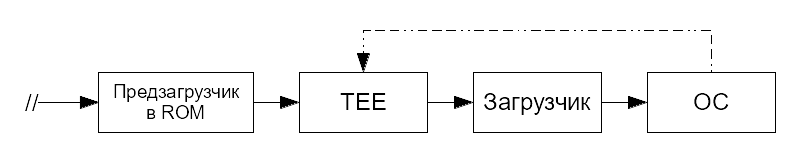

Linux for ARM
- Автор(ы): Pelmen Zharenny
- Связаться с автором: Telegram
- Версия LFA: 1.0 Alpha 1
Linux for ARM (далее — LFA) — подробное руководство по сборке Linux-системы из исходного кода для компьютеров на архитектуре ARM1.
На данный момент в руководстве описаны сведения о сборке Linux ОС для SoC Allwinner, Broadcom и Rockchip.
Предисловие
В декабре 2023 года я приобрёл себе одноплатник Orange Pi 3 LTS. Скачанная с офсайта Orange Pi система Debian оказалась настолько кривой, что я через какоето время удалил её, установив дистрибутив Armbian. У последнего был ряд преимуществ в виде первичной настройки системы (после первой загрузки запускалась консольная утилита, в которой человек создавал пользователя, от имени которого будет работать, настраивал время и локализацию и совершал ещё ряд каких-то действий). Но были и недостатки: у меня просто не сохранялся ряд настроек системы (да и браузер Firefox тоже вёл себя очень странно), да и сама система была собрана не очень корректно. Пробовал ставить Manjaro Linux, но и с ней были проблемы, а именно видеоартефакты.
Да и в тех дистрибутивах, что я использовал на моей Orange Pi, было огромное число абсолютно не нужного и лишнего ПО, которое только засоряло систему и занимало драгоценное место на SD-карте.
Поэтому я решился на сборку своей системы Linux из исходного кода. До этого я увлекался LFS, поэтому у меня был небольшой опыт сборки таких систем, но не было опыта кросс-компиляции системы для другой архитектуры.
LFA, на мой взгляд, является неплохим pet-проектом, которым я занимаюсь исключительно в свободное время. Будет что показать будущим работодателям :).
Почему создан «очередной LFS», неужели нет готовых решений?
Основная причина создания LFA: необходимость зафиксировать для себя любимого те действия, которые я выполнял для сборки своей Linux-системы чтобы потом к ним в будущем вернуться и либо исправить, чтобы они стали корректными или более предпочтительными, либо чтобы вернуться к ним в будущем. Следовательно, LFA сама по себе предназначена только для меня (автора руководства), однако я надеюсь, что информация отсюда откажется полезна и другим людям.
Создание руководства по сбокре своего дистрибутива Linux для ARM-компьютеров в чём-то ново, поскольку достаточно известные руководства типа LFS или Linux для себя предназначены для x86/x86_64 компьютеров, а для ARM-девайсов особой информации не так уж и много, а руководство CLFS Embedded, на основе которого и создана LFA, давно заброшено и, как следствие, несколько устарело.
Что LFA предоставляет пользователю?
В данном руководстве вы не увидите информации о сборке пригодной к использованию системы, в которой будет браузер, офисный пакет, рабочее окружение и куча игр. Здесь не будет сведений о сборке системы, пригодной к использованию в IoT или умном доме. Предполагается, что вы дойдёте до этого сами.
LFA предназначена в первую очередь для того, чтобы показать вам, как потенциальному разработчику для Linux, отличия ARM-компьютеров от их x86_64 "собратьев". LFA, может быть, даст вам опыт в сборке программного обеспечения, а также, наверное, расскажет вам о строении Linux-систем. Но это не точно. Основная идея LFA заключается в том, что только вы решаете, собирать ли систему для ARM-ПК, а если и собирать, то что и каким образом. LFA предоставляет лишь шаблон, по которому можно это сделать.
Отличия от CLFS
Важным отличием от CLFS является то, что LFA полностью на русском языке. К тому же, LFA ориентирована на аудиторию, проживающую в странах СНГ, т.е. тех людей, которые хотя бы на базовом уровне владеют русским языком.
В LFA приводятся различные дополнительные сведения, касающиеся как в целом ОС, использующих ядро Linux, так и таковых систем, предназначенных для компьютеров с архитектурой ARM. В данном руководстве приведены рекомендуемые параметры сборки для некоторых конкретных моделей ПК.
Здесь используются относительно новые версии программного обеспечения, в то время как последний релиз CLFS Embedded для ARM был датирован 2019 годом. В новых версиях ПО исправляют ошибки и уязвимости, а также добавляют новый функционал.
В конце некоторых страниц может быть расположен блок «Смотрите также» со ссылками на дополнительные сведения, документацию или внешние ресурсы. Если вы хотите знать больше, можете ознакомиться с информацией по ссылкам из этого блока.
И в завершение, LFA предоставляет инструкции по сборке загрузчика U-Boot (на данный момент для плат на основе SoC Allwinner, Broadcom, Rockchip и для эмуляции в QEMU).
От авторов
Мы, разработчики LFA, ценим, что вы читаете это руководство. Надеемся, что оно принесёт вам как образовательную пользу, так и, возможно, практическую.
Если у вас возникли вопросы или проблемы, либо вы хотите внести свой вклад в развитие данного руководства, то, пожалуйста, оставьте запрос в нашем репозитории по адресу https://github.com/Linux-for-ARM/handbook.
С уважением, команда Linux for ARM.
Преимущества
Главная цель этого руководства — дать вам, как потенциальному разработчику дистрибутивов Linux для ARM-компьютеров, понимание того, как работают операционные системы, использующие ядро Linux, на компьютерах с ARM-процессорами. Сборка своей системы с нуля для ARM-компьютеров поможет узнать, как всё работает вместе и как каждый компонент системы взаимодействует с другим. Возможно, что собранная вашими руками система будет намного надёжнее и удобнее уже существующих «портов» дистрибутивов GNU/Linux на ARM. Кроме того, LFA даст опыт в сборке ПО из исходного кода, что может пригодиться и при администрировании «обычных» ОС GNU/Linux, предназначенных для работы на x86(_64) компьютерах.
Как я обнаружил, сборка системы из исходного кода - это довольно сложная работа, но в то же время интересная и в чём-то весёлая, и вы действительно чему-либо научитесь, поскольку вам нужно настроить каждый отдельный аспект системы. Это заставляет вас читать множество руководств по настройке различных компонентов ОС. Кроме того, это даёт вам контроль над системой: вы точно знаете, какое ПО установлено, как оно настроено и где хранятся его файлы.
Другое ключевое преимущество — независимость от других сборщиков. Только вы решаете, что собирать, а что нет, какие применять патчи и как настраивать систему.
Прежде чем начать
Сборка своей системы — не самая простая задача. От вас потребуются знания в администрировании UNIX-систем для того, чтобы вы имели возможность устранять проблемы в процессе сборки, правильно выполнять ввод требуемых команд и при необходимости изменять ход сборки программного обеспечения в зависимости от ваших потребностей и желаний.
Во-первых, вы должны уметь пользоваться терминалом, в частности, владеть программами из состава coreutils1, копировать и перемещать файлы и каталоги, просматривать содержимое директорий и файлов. Также ожидается, что у вас есть знания о процессе установки программного обеспечения в Linux.
Рекомендуем чаще обращаться к разделу «Вспомогательные материалы», в котором находятся ответы на часто задаваемые вопросы. В этот раздел часто добавляются новые сведения.
Программы для работы с файлами (копирование, удаление, перемещение, создание), правами доступа, вычисления контрольных сумм и т.д.
Принятые обозначения
В руководстве используются следующие обозначения:
./configure --prefix=/usr --target=$LFA_TGT
Этот текст необходимо набрать в терминале в точности так, как указано, если иное не сказано в тексте.
Иногда строка разделяется до двух или более с использованием символа \:
ARCH=arm ./configure --prefix=/usr \
--target=$LFA_TGT \
--with-sysroot=$LFA_SYS \
--disable-nls \
--disable-threads
Обратите внимание на то, что после \ должен быть переход на новую строку (Enter). Другие символы приведут к некорректному результату и ошибкам.
2024-02-27 18:58:13 [INFO] (mdbook::cmd::serve): Files changed: ["/home/admin/Work/lfa/src/typography.md"]
2024-02-27 18:58:13 [INFO] (mdbook::cmd::serve): Building book...
2024-02-27 18:58:13 [INFO] (mdbook::book): Book building has started
2024-02-27 18:58:13 [INFO] (mdbook::book): Running the html backend
Этот текст используется для отображения вывода в терминале.
Используется, чтобы подчеркнуть важную информацию, на которую следует обратить внимание.
Используется для ссылок на страницы руководства.
Используется для ссылок на внешние ресурсы (только в главах 2-7 и в главе 10).
Используется для указания на критически важную информацию. На неё следует обратить особое внимание.
Используется для указания на информацию рекомендательного характера. Не рекомендуется пропускать эти указания и внимательно с ними ознакомиться.
Опечатки и неточности
Если вы нашли в руководстве ошибку, опечатку или хотите предложить нам какое-либо изменение, которое, на ваш взгляд, важно для LFA, то, пожалуйста, оставьте запрос в нашем репозитории на GitHub. Мы открыты к диалогу, и вы, как читатель, всегда можете предложить свои замечания, улучшения и изменения.
Целевая архитектура
Предполагается, что LFA будет собираться для архитектуры ARMv8 (AArch64). Работа собранной по LFA системы проверялась на процессоре1 Allwinner H6 (ARM Cortex-A532). С другой стороны, в данном руководстве ещё остались инструкции, содержащий в том числе сведения для более старых архитектур семейства ARM в наследие от руководства CLFS Embedded. В ближайшее время мы не планируем удалять их или как-то актуализировать, по крайней мере это не будет сделано до релиза 2.0. Тем не менее, основной архитектурой для нас является ARMv8.
Для сборки LFA для того или иного AArch64-процессора мы будем использовать x86_64 хост. Компиляция ПО будет производиться посредством кросс-компилятора, который мы соберём в начале и будем использовать на протяжении всего руководства.
В адрес подобных устройств куда справедливее использовать термин «SoC» (System on Chip, Система на Кристалле), но для простоты ограничимся понятием «процессор».
Существуют процессоры Cortex-A, предназначенные для устройств, требующих относительно высокой производительности, Cortex-R для ПО, работающего в режиме реального времени и Cortex-M для микроконтроллеров и встраиваемых устройств. В данном руководстве идёт упор на процессоры Cortex-A.
Информация об используемом ПО
Как говорилось ранее, в LFA содержатся инструкции только по сборке базового программного обеспечения. Собранная система будет включать в себя базовое программное обеспечение для работы с файлами, процессами и сетью. Однако это не значит, что полученная система будет максимально компактной.
BusyBox-1.36.1
Объединяет крошечные версии многих распространённых утилит UNIX в один небольшой двоичный файл (1-2 Мбайт). Он заменяет большинство утилит, которые обычно находятся в GNU Coreutils, GNU Findutils и т.д.
- Домашняя страница: https://www.busybox.net
- Скачать: https://busybox.net/downloads/busybox-1.36.1.tar.bz2
- MD5 сумма:
0fc591bc9f4e365dfd9ade0014f32561
GCC-13.2.0
Набор компиляторов GNU GCC.
- Домашняя страница: https://gcc.gnu.org
- Скачать: https://ftp.gnu.org/gnu/gcc/gcc-13.2.0/gcc-13.2.0.tar.xz
- MD5 сумма:
e0e48554cc6e4f261d55ddee9ab69075
GMP-6.3.0
Пакет с математическими библиотеками, которые предоставляют полезные функции для арифметики произвольной точности. Необходим для сборки GCC.
- Домашняя страница: https://gmplib.org
- Скачать: https://ftp.gnu.org/gnu/gmp/gmp-6.3.0.tar.xz
- MD5 сумма:
956dc04e864001a9c22429f761f2c283
Linux-6.6.6
Ядро операционной системы.
- Домашняя страница: https://www.kernel.org
- Скачать: https://www.kernel.org/pub/linux/kernel/v6.x/linux-6.6.6.tar.xz
- MD5 сумма:
dd66281fed9b76c08dc8b72eb76df96f
MPC-1.3.1
Математические функции для комплексных чисел. Необходим для сборки GCC.
- Домашняя страница: http://www.multiprecision.org/
- Скачать: https://ftp.gnu.org/gnu/mpc/mpc-1.3.1.tar.gz
- MD5 сумма:
5c9bc658c9fd0f940e8e3e0f09530c62
MPFR-4.2.1
Функции для арифметики множественной точности. Необходим для сборки GCC.
- Домашняя страница: https://www.mpfr.org
- Скачать: https://ftp.gnu.org/gnu/mpfr/mpfr-4.2.1.tar.xz
- MD5 сумма:
523c50c6318dde6f9dc523bc0244690a
TF-A-2.10.2
Проект Trusted Firmware-A предоставляет эталонную реализацию безопасного программного обеспечения для процессоров класса ARMv7-A и ARMv8-A.
- Домашняя страница: https://www.trustedfirmware.org/projects/tf-a/
- Скачать: https://git.trustedfirmware.org/TF-A/trusted-firmware-a.git/snapshot/trusted-firmware-a-lts-v2.10.2.tar.gz
- MD5 сумма:
9d223fd5e7863ec223565c385f9a68ed
Wireless Tools-29
Набор инструментов для работы с Wireless Extensions (WE — API ядра Linux, позволяющий драйверу передавать в пользовательское пространство конфигурацию и статистику, характерные для беспроводных локальных сетей).
- Домашняя страница: https://hewlettpackard.github.io/wireless-tools/
- Скачать: https://hewlettpackard.github.io/wireless-tools/wireless_tools.29.tar.gz
- MD5 сумма:
e06c222e186f7cc013fd272d023710cb
binutils-2.42
Этот пакет содержит компоновщик, ассемблер и другие утилиты для работы с объектными файлами.
- Домашняя страница: https://www.gnu.org/software/binutils
- Скачать: https://sourceware.org/pub/binutils/releases/binutils-2.42.tar.xz
- MD5 сумма:
a075178a9646551379bfb64040487715
iana-etc-20240125
Данные для сетевых служб и сервисов. Необходим для обеспечения надлежащих сетевых возможностей.
- Домашняя страница: https://www.iana.org/protocols
- Скачать: https://github.com/Mic92/iana-etc/releases/download/20240125/iana-etc-20240125.tar.gz
- MD5 сумма:
aed66d04de615d76c70890233081e584
musl-1.2.5
Минималистичная стандартная библиотека языка С.
- Домашняя страница: https://musl.libc.org
- Скачать: https://musl.libc.org/releases/musl-1.2.5.tar.gz
- MD5 сумма:
ac5cfde7718d0547e224247ccfe59f18
u-boot-2023.10
Загрузчик операционной системы, предназначенный для встраиваемых систем на MIPS, ARM, PowerPC и т.д.
- Домашняя страница: https://source.denx.de/u-boot/u-boot
- Скачать: https://source.denx.de/u-boot/u-boot/-/archive/v2023.10/u-boot-v2023.10.tar.bz2
- MD5 сумма:
3491cd4aa6c52a7c77f7f626d4df9442
Подготовка к сборке
В данной главе приведены сведения, касаемые подготовки вашей хост-системы к сборке LFA. Вам требуется создать пользователя, настроить его окружение и создать базовую структуру каталогов собираемой системы.
Ход сборки LFA
- Подготовка к сборке - на данном этапе мы создадим отдельного пользователя, от имени которого будем собирать систему, настроим его окружение и подготовим всё, что требуется для сборки LFA.
- Сборка кросс-компилятора - поскольку сборка производится с компьютера x86_64 для компьютера AArch64, нам требуется собрать кросс-компилятор, позволяющий выполнить это. После сборки с его помощью базовой системы мы его удалим.
- Сборка базовой системы - здесь мы собирём базовую систему, которая и будет являться той самой LFA.
- Настройка базовой системы - на данном этапе требуется произвести настройку базовой системы: создать ряд конфигурационных файлов и при необходимости исправить существующие.
- Сборка ядра - на данном этапе необходимо собрать ядро Linux с учётом всех ваших требований и пожеланий.
- Сборка загрузчика - заключительный этап, на котором вы соберёте загрузчик U-Boot для конкретной модели компьютера, для которой вы собираете систему LFA.
- Конец - сборка системы полностью завершилась. Теперь остаётся сделать img-образ, пригодный для записи на внешний носитель, который будет выступать в роли загрузочного в компьютере, для которого вы собирали LFA.
Требования к хосту
Оборудование
- Раздел на жёстком диске или просто свободное место, рекомендуемый объём которого - 10 Гб и более.
- Если оперативной памяти хост-компьютера мало (менее 4 Гб), рекомендуется создать раздел или файл подкачки. Кроме того, можно использовать
zram.
Программное обеспечение
На вашей хост-системе должно быть установлено ПО из списка ниже с указанными минимальными версиями. Для большинства современных дистрибутивов Linux это не должно быть особой проблемой.
bash-3.2(/bin/shдолжна быть ссылкой наbash)bc-1.07(для компиляции Linux)binutils-2.13bison-2.7(/usr/bin/yaccдолжен быть ссылкой наbison)coreutils-8.1diffutils-2.8.1findutils-4.2.31gawk-4.0.1(/usr/bin/awkдолжен быть ссылкой наgawk)gcc-5.2(влючающий компилятор языка С)grep-2.5.1agzip-1.3.12linux-4.19m4-1.4.10make-4.0patch-2.5.4perl-5.8.8python-3.4rsync-3.2.7(для установки заголовков ядра на этапе сборки кросс-компилятора)sed-4.1.5setuptools-66.1(для компиляции U-Boot)1swig-4.0(для компиляции U-Boot)tar-1.22u-boot-tools-2023.01(для сборки ядра Linux и работы с загрузчиком U-Boot)xz-5.0wget-1.23иmd5sum(для скачивания исходного кода LFA)
Если вы собираетесь сделать систему для компьютера на базе Allwinner SoC (например, этот SoC используется в ряде моделей Orange Pi, например в Orange Pi 3 LTS), то для сборки одного из компонентов загрузчика U-Boot вам будет нужен кросс-компилятор для архитектуры or1k. В этом руководстве не приводится сведений о его сборке (сборка сначала кросс-компилятора для ARM, потом кросс-компилятора для OpenRISC усложнит и раздует LFA и собьёт с толку тех читателей, кто не пользуется Allwinner), однако вы можете либо использовать готовый кросс-компилятор для этой архитектуры (например, некоторые дистрибутивы, такие как ArchLinux, содержат в репозиториях пакеты с Binutils и GCC для данной архитектуры), либо собрать его самостоятельно В скором времени проектом LFA будут подготовлены как инструкции по сборке такого кросс-компилятора (они не будут входить в состав основного руководства, а будут доступны отдельно) и готовая версия такого кросс-компилятора.
Это модуль языка Python, который может быть установлен с помощью пакетного менеджера pip (входит в состав Python и обычно устанавливается вместе с ним), либо с помощью пакетного менеджера вашего дистрибутива, если в его репозиториях поставляются пакеты для Python (в таком случае имя пакета, содержащего Python-модуль setuptools, может быть python-setuptools или python3-setuptools). Использование пакетного менеджера вашего дистрибутива вместо pip предпочтительнее, поскольку в таком случае setuptools будут установлены именно в систему, откуда интерпретатор Python будет иметь к нему доступ. С недавнего времени пакетный менеджер pip отключил «глобальную» установку Python-модулей в систему по умолчанию, став предпочитать установку модулей в виртуальное окружение Python.
О времени сборки пакетов
Время сборки пакетов во многом зависит от мощности компьютера. Но также на время влияют и иные факторы, такие как, например, версия компилятора и системы сборки, а также использование многопоточной сборки.
Поскольку от компьютера к компьютеру время сборки может меняться (на одном ПК пакет some-pkg собирается за 3 минуты, а на другом тот же some-pkg — за 3 недели), в руководстве введена специальная единица времени, которая называется «ОВС» (Относительное Время Сборки).
1 ОВС равна времени сборки первого пакета. К примеру, если первый пакет в этом руководстве собирается за 3 минуты, то 1 ОВС = 3 мин. Если время сборки какого-то пакета = 10 ОВС, то, переводя в минуты, это будет 30 минут.
ОВС не даёт совсем точных значений, поскольку они зависят от многих факторов, включая версию компилятора GCC на хост-системе. ОВС нужна для примерной оценки времени сборки пакета.
Создание пользователя lfa
Рекомендуем выполнять сборку от имени отдельного пользователя, у которого будет доступ только к ограниченному набору файлов. Не рекомендуем вам собирать систему от имени текущего пользователя или пользователя root, так как, если вы ошиблись в наборе команд для сборки, есть вероятность порчи или потери пользовательских данных или поломки системы.
Вы можете использовать произвольного пользователя, но для упрощения настройки чистого рабочего окружения создайте нового пользователя с именем lfa как члена группы lfa:
Внимание
Если вы читаете PDF-версию руководства и хотите скопировать из него команды далее в терминал, рекомендуем вам не делать этого. Несмотря на то, что сами команды корректные (и правильно отображаются в PDF-книге), при копировании зачастую в буфер обмена попадают некорректные данные (такой проблемы нет, если вы читаете обычную HTML-версию LFA). Рекомендуем перепечатывать команды из PDF-версии LFA.
groupadd lfa
useradd -s /bin/bash -g lfa -m -k /dev/null lfa
Значения новых параметров:
groupadd lfa- создаёт новую группуlfa.
-s /bin/bash- указывает/bin/bashоболочкой по умолчанию для пользователяlfa.
-g lfa- добавляет пользователяlfaв группуlfa.
-m- создаёт домашнюю директорию пользователяlfa(по умолчанию в/home/lfa).
-k /dev/null- предотвращает копирование файлов из/etc/skel- каталога, в котором содержатся стандартные конфиги и иные файлы, которые обычно копируются в домашнюю директорию пользователя во время его создания.
Когда вы находитесь в терминале от имени пользователя root и переключаетесь на пользователя lfa, вам не требуется ввода пароля lfa. Однако когда вы переключаетесь на lfa с обычного пользователя, без пароля у вас не получится этого сделать.
Задайте для пользователя lfa новый пароль:
passwd lfa
Теперь вам необходимо войти от имени lfa. Для этого выполните:
su - lfa
Если вы прервали сборку LFA досрочно и хотите продолжить её спустя какое-то время, то вам нужно будет выполнить вход в этого пользователя снова с помощью этой же команды.
Настройка окружения
После того, как вы создали нового пользователя, от имени которого будете собирать LFA, нужно настроить его окружение. Как минимум, требуется объявить ряд переменных окружения, которые мы будем использовать при сборке программ. В таких переменных содержатся сведения, неизменные от пакета к пакету. Например, путь, куда нужно устанавливать программы, целевая архитектураи т.п. Если после создания пользователя вы вошли в терминале от его имени, то приступайте к выполнению инструкций ниже. В противном случае от вас требуется сначала войти от имени lfa с помощью команды su - lfa.
Первым делом требуется создать файл ~/.bash_profile:
cat > ~/.bash_profile << "EOF"
exec env -i HOME=$HOME TERM=$TERM PS1='\u:\w\$ ' /bin/bash
EOF
При входе в систему от имени пользователя lfa начальной оболочкой обычно является оболочка входа в систему, которая читает файл /etc/profile, содержащий основные общесистемные настройки и переменные окружения, а затем ~/.bash_profile. Команда exec env -i ... /bin/bash в последнем заменяет запущенную оболочку новой с абсолютно пустым окружением, за исключением переменных $HOME, $TERM и $PS1. Это гарантирует нам, что никакие нежелательные и потенциально опасные переменные окружения из хост-системы не «просочатся» в нашу среду сборки.
Новый экземпляр оболочки вместо /etc/profile и ~/.bash_profile будет читать уже файл ~/.bashrc. Создайте его:
cat > ~/.bashrc << "EOF"
set +h
umask 022
unset CFLAGS
LFA=$HOME/lfa
LC_ALL=C
PATH=$LFA/tools/bin:/bin:/usr/bin
export LFA LC_ALL PATH
EOF
Применение изменений
Для того, чтобы применить внесённые нами изменения, выполните:
source ~/.bash_profile
Значения параметров
~/.bashrc:Команда
set +hотключает хеш-функцию BASH. Хеширование в общем случае является полезной вещью, поскольку BASH использует хеш-таблицу для запоминания полного пути к исполняемым файлам, чтобы не искать путь до исполняемого файла в$PATHснова и снова. Однако новые программы для сборки, которые мы только что установили в$LFA/tools/bin, требуется использовать сразу же после их установки. После отключения хеширования оболочка BASH сразу найдёт только что установленные программы, не вспоминая о предыдущей версии программы в другом месте.Исполнение команды
umask 022гарантирует, что вновь созданные файлы и каталоги могут быть записаны только их владельцем, но могут быть прочитаны и исполнены любым пользователем.Далее во избежание сбоев во время сборки кросс-компилятора нам требуется «удалить» переменную окружения
CFLAGS.Переменная окружения
LFAсодержит путь до дитректории, в которой будем собирать систему.
LC_ALLуправляет локализацией программ, заставляя сообщения, которые они выводят в терминал, следовать конвенциям указанной в этой переменной страны. Во избежание проблем сборки любые значенияLC_ALL, отличные отPOSIXилиC, использовать не рекомендуется.Переменная окружения
PATHсодержит пути до директорий, в которых содержатся исполняемые файлы. Благодаря этой переменной в терминале мы можем просто ввестиsome_programвместо указания полного пути/usr/bin/some_program. В эту переменную мы добавляем путь до двоичных исполняемых файлов собираемого нами кросс-компилятора ($LFA/tools/bin), а также «стандартные» для хост-системы директории/binи/usr/bin. Указание пути до кросс-компилятора раньше, чем путей до других инструментов вкупе с отключением хеширования гарантирует, что для сборки системы у нас будут использованы только нужные программы из кросс-компилятора, а не из хост-системы.
Установка переменных сборки
В данной части будет произведена установка ряда важных переменных, которые будут использоваться для сборки программ. Определите, для какой архитектуры семейства ARM вы будете собирать систему и в зависимости от этого выбирайте набор нужных вам переменных. Обращаем ваше внимание на то, что LFA предназначена в первую очередь для процессоров с архитектурой AArch64. Работа LFA на других архитектурах не проверялась. Поддержка других архитектур оставлена здесь "в наследие" от оригинальной CLFS.
То, что это дополнительные переменные окружения, совсем не значит, что они являются необязательными. Мы вынесли объявление этих переменных окружения в отдельную страницу потому, что на предыдущей странице шла речь об общих переменных окружения. Переменные же на текцщей странице предназначены исключительно для сборки ПО. Кроме того, если для общих переменных существует один единственный шаблон, который можно использовать для всех сборок LFA, то значения для переменных на данной странице пользователь выбирает самостоятельно в зависимости от оборудования, для которого он собирает эту систему.
Хост и цель
Напомним вам, что такое хост-компьютер и целевой компьютер. Хост-компьютер (host) — это ПК, на котором вы собираете кросс-компилятор и прочие вещи. А целевой компьютер (target) — тот ПК, для которого вы это собираете. В данном руководстве хост-компьютером является компьютер на архитектуре x86_64, а целевым — компьютер на архитектуре AArch64.
В настоящее время мы составляем список процессоров (бренд процессора, модель процессора, его архитектура и модели ПК, где он применяется), в котором будут указаны полные сведения о том, какие значения используются для переменных
LFA_FPU,LFA_ARCHиLFA_TGT.
В случае, если вы собрали систему, используя определённые значения, то, пожалуйста, оставьте запрос в нашем репозитории GitHub по этому поводу. Укажите бренд процессора, еего модель и его архитектуру, а также модель компьютера, для которого вы собирали систему. Кроме того, совсем не лишним будет, если вы укажете, как собралась ваша система: собралась ли она корректно или были всевозможные ошибки в процессе сборки или в процессе её функционирования.
Пример такого запроса (issue):
# Сборка системы для компьютера Orange Pi 3 LTS
- **Бренд процессора:** Allwinner
- **Модель процессора:** Allwnner H6
- **Архитектура:** Cortex-A53 (AArch64)
- **Статус сборки:** система собралась нормально
- **Статус функционирования:** система работает корректно
## Значения переменных сборки
`LFA_TGT`=`aarch64-linux-musleabihf`
`LFA_HOST`=`...`
`LFA_ARCH`=`armv8-a`
Для архитектуры AArch64
Для сборки кросс-компилятора вам нужно задать несколько переменных, которые будут зависеть от того, для какого оборудования вы хотите собрать LFA. Вам нужно выбрать триплет для целевой архитектуры, архитектуру процессора и т.д. Для выбора нужных значений пользуйтесь приведёнными на данной странице таблицами.
Установите триплеты для хоста и целевой машины:
export LFA_HOST=$(echo ${MACHTYPE} | sed "s/-[^-]*/-cross/")
export LFA_TGT="aarch64-linux-musleabihf"
Выберите архитектуру, для которой будете собирать систему:
export LFA_ARCH="архитектура"
| ARCH | ARCH | ARCH | ARCH |
|---|---|---|---|
armv8-a | armv8-m | armv8 | armv8-r |
armv8.1-a | armv8.1-m | armv8.1-r |
Например, для процессоров Cortex-A53 $LFA_ARCH="armv8-a".
Запишите эти переменные в ~/.bashrc, чтобы не вводить их значения каждый раз после входа от имени пользователя lfa:
cat >> ~/.bashrc << EOF
export LFA_HOST="$LFA_HOST"
export LFA_TGT="$LFA_TGT"
export LFA_ARCH="$LFA_ARCH"
EOF
Далее и на протяжении всего руководства, если вы собираете систему для AArch64, то не используйте переменные окружения $LFA_FLOAT и $LFA_FPU, а также пропускайте при вводе команд строки, содержащие эти переменные окружения. Например, если вы собираете систему для AArch64, то скрипту configure не следует передавать эти аргументы:
--with-float=$LFA_FLOAT \
--with-fpu=$LFA_FPU
Для других архитектур
Если ваш процессор — ARM9, хорошие варианты: триплет из
arm-linux-musleabi, архитектура —armv5tи поддержка плавающей запятой —soft. ARM9-процессоры обычно не имеют аппаратных возможностей работы с плавающей запятой.
Для сборки кросс-компилятора вам нужно задать несколько переменных, которые будут зависеть от того, для какого оборудования вы хотите собрать LFA. Вам нужно выбрать триплет для целевой архитектуры, архитектуру процессора и т.д. Для выбора нужных значений пользуйтесь приведёнными на данной странице таблицами.
Если ваш целевой процессор имеет аппаратную поддержку плавающей запятой, то установите переменную LFA_FLOAT в значение hard или softfp. Используйте softfp, если в будущем вы будете использовать в собранной системе ещё и программы, скомпилированные с помощью soft. В противном случае используйте hard. Если ваш целевой процессор не поддерживает плавающую запятую, используйте в качестве значения LFA_FLOAT soft:
export LFA_FLOAT="[hard, soft или softfp]"
Если вы выбрали hard или softfp для LFA_FLOAT, то теперь вам нужно установить, какое оборудование для работы с плавающей запятой используется в целевом процессоре (согласно таблице ниже):
export LFA_FPU="одно из значений из таблицы ниже"
| FPU | FPU | FPU | FPU |
|---|---|---|---|
fpa | fpe2 | fpe3 | maverick |
vfp | vfpv3 | vfpv3-fp16 | vfpv3-d16 |
vfpv3-d16-fp16 | vfpv3xd | vfpv3xd-fp16 | neon |
neon-fp16 | vfpv4 | vfpv4-d16 | fpv4-sp-d16 |
neon-vfpv4 |
Установите триплеты для хоста и целевой машины:
export LFA_HOST=$(echo ${MACHTYPE} | sed "s/-[^-]*/-cross/")
export LFA_TGT="триплет для целевой машины"
Значение $LFA_FLOAT | Триплет |
|---|---|
soft или softfp | arm-linux-musleabi |
hard | arm-linux-musleabihf |
Выберите архитектуру, для которой будете собирать систему:
export LFA_ARCH="архитектура"
| ARCH | ARCH | ARCH | ARCH |
|---|---|---|---|
armv4t | armv5t | armv5te | armv6 |
armv6j | armv6k | armv6kz | armv6t2 |
armv6z | armv6-m | armv7 | armv7-a |
armv7-r | armv7-m | armv9-a | armv9 |
Запишите эти переменные в ~/.bashrc, чтобы не вводить их значения каждый раз после входа от имени пользователя lfa:
cat >> ~/.bashrc << EOF
export LFA_HOST="$LFA_HOST"
export LFA_TGT="$LFA_TGT"
export LFA_ARCH="$LFA_ARCH"
export LFA_FLOAT="$LFA_FLOAT"
export LFA_FPU="$LFA_FPU"
EOF
Создание основных каталогов
Создайте каталог, в котором будет содержаться файлы кросс-компилятора. Для того, чтобы постоянно не указывать путь до него при сборке пакетов, объявите новую переменную окружения $LFA_CROSS:
export LFA_CROSS=$LFA/tools/$LFA_TGT
mkdir -pv $LFA_CROSS
ln -svf . $LFA_CROSS/usr
echo "export LFA_CROSS=\$LFA/tools/\$LFA_TGT" >> ~/.bashrc
Кроме того, вам необходимо создать директорию, где будет храниться исходный код компонентов:
mkdir -v src
В итоге в домашней папке пользователя lfa будет примерно такая структура файлов:
/home/lfa
|-- lfa/
| `-- tools/
| `-- aarch64-linux-musleabihf/
| `-- usr/ -> .
`-- src/
И содержимое файла ~/.bashrc после всех записей в него (в зависимости от выбранной вами архитектуры его содержимое может незначительно меняться):
set +h
umask 022
unset CFLAGS
LFA=$HOME/lfa
LC_ALL=C
PATH=$LFA/tools/bin:/bin:/usr/bin
export LFA LC_ALL PATH
export LFA_HOST="x86_64-cross-linux-gnu"
export LFA_TGT="aarch64-linux-musleabihf"
export LFA_ARCH="armv8-a"
export LFA_CROSS=$LFA/tools/$LFA_TGT
Скачивание пакетов
Перейдите в директорию src/, которую вы создали ранее:
cd src/
Скачайте файлы wget-list и md5sums, которые будут использованы для скачивания исходного кода компонентов системы:
wget https://raw.githubusercontent.com/Linux-for-ARM/handbook/master/wget-list
wget https://raw.githubusercontent.com/Linux-for-ARM/handbook/master/md5sums
И скачайте системные компоненты:
wget --input-file=wget-list --continue
Для проверки корректности скачивания пакетов вам нужно воспользоваться файлом md5sums:
md5sum -c md5sums
Сборка кросс-компилятора
В данной главе вы соберёте кросс-компилятор, необходимый для дальнейшей сборки LFA. Подробные сведения о том, зачем это нужно, вы можете получить в дополнительных материалах.
Перед выполнением инструкций по сборке пакета необходимо распаковать его от имени пользователя lfa и перейти в распакованную директорию с исходным кодом пакета (обычно директория имеет то же имя, что и архив с исходниками, но без расширения .tar.*) с помощью команды cd ИМЯ_ДИРЕКТОРИИ. В инструкциях по сборке предполагается, что используется командная оболочка BASH или совместимая с ней.
Во время компиляции большинства пакетов на экран будут выводиться различные сообщения, в том числе и предупреждения. Это предупреждения как правило об устаревшем использовании синтаксиса языка программирования С. Это не является проблемой, но вызывает предупреждение.
После установки пакета как в этой, так и в следующих главах, перейдите обратно в директорию src/ (командой cd .. или cd ../.. если сборка производилась в отдельной директории), а затем удалите каталог, в котором вы собирали этот пакет.
linux-headers
Заголовочные файлы ядра Linux, необходимые для сборки кросс-компилятора
- Версия: 6.6.6
- Домашняя страница: https://www.kernel.org
- Время сборки: 0.5 ОВС
Настройка
Убедитесь, что дерево исходного кода Linux чистое и не содержит лишних файлов:
make mrproper
Установка
make ARCH=arm64 INSTALL_HDR_PATH=$LFA_CROSS headers_install
Обратите внимание на аргумент ARCH=arm64. Для 32-битных процессоров нужно заменить этот аргумент на ARCH=arm.
Например, если ваш процессор имеет 64-битную архитектуру (ARMv8 или ARMv8.1), то оставьте этот аргумент без изменений. Однако если у вас иная 32-битная архитектура, то замените ARCH=arm64 на ARCH=arm.
Если во время установки заголовков ядра (в частности, при исполнении второй команды
headers_install) у вас возникли ошибки, проверьте, установлена ли в системе программаrsync.
Значения новых параметров:
ARCH=arm64- указываетmakeустанавливать заголовки для архитектурыarm64.
INSTALL_HDR_PATH=$LFA_CROSS- указывает префикс, в который будут установлены заголовки.
Содержимое пакета
- Установленные заголовки:
$LFA_CROSS/include/{asm,asm-generic,drm,linux,misc,mtd,rdma,scsi,sound,video,xen}/*.h
Описание компонентов
$LFA_CROSS/include/asm/*.h- заголовки Linux API ASM.$LFA_CROSS/include/asm-generic/*.h- общие заголовки Linux API ASM.$LFA_CROSS/include/drm/*.h- заголовки Linux DRM.$LFA_CROSS/include/linux/*.h- заголовки Linux API.$LFA_CROSS/include/misc/*.h- различные заголовки Linux API.$LFA_CROSS/include/mtd/*.h- заголовки Linux API MTD.$LFA_CROSS/include/rdma/*.h- заголовки Linux API RDMA.$LFA_CROSS/include/scsi/*.h- заголовки Linux API SCSI.$LFA_CROSS/include/sound/*.h- заголовки Linux API для работы со звуком.$LFA_CROSS/include/video/*.h- заголовки Linux API для работы с видео.$LFA_CROSS/include/xen/*.h- заголовки Linux API XEN.
Смотрите также:
binutils
Этот пакет содержит компоновщик, ассемблер и другие утилиты для работы с объектными файлами.
- Версия: 2.42
- Домашняя страница: https://www.gnu.org/software/binutils
- Время сборки: 1 ОВС
Настройка
Сборка пакета binutils должна происходить в отдельном каталоге. Создайте его:
mkdir -v build
cd build
Запустите скрипт configure для генерации предназначенных для сборки файлов Makefile:
../configure --prefix=$LFA/tools \
--target=$LFA_TGT \
--with-sysroot=$LFA_CROSS \
--disable-nls \
--enable-gprofng=no \
--disable-werror \
--disable-multilib
Значения новых параметров:
--prefix=$LFA/tools- указывает скриптуconfigureподготовиться к установке пакета в директорию$LFA/tools.
--target=$LFA_TGT- создаёт кросс-архитектурный исполняемый файл, который запускается на x86_64-системе, но создаёт файлы для$LFA_TGT-архитектуры.
--with-sysroot=$LFA_CROSS- сообщаетconfigure, что$LFA_CROSSбудет корнем кросс-компилятора.
--disable-nls- отключает сборку пакета с поддержкой интернационализации и локализации. В кросс-компиляторе это не нужно.
--enable-gprofng=no- отключает сборкуgprofng, который не нужен в кросс-компиляторе.
--disable-werror- отключает остановку сборку при возникновении предупреждений.
--disable-multilib- отключает сборку multilib.
Сборка
make configure-host
make
Значения новых параметров:
make configure-host- проверяет окружение хоста и убеждается, что все необходимые инструменты доступны для компиляцииbintuils.
Установка
make install
Содержимое пакета
- Установленные программы:
addr2line,ar,as,c+filt,elfedit,gprof,ld,nm,objcopy,objdump,ranlib,readelf,size,strings,strip. - Установленные библиотеки:
libibery.a,libbbfd.{a,so},libopcodes.{a,so}
Описание компонентов
- Программы:
addr2line- транслирует адреса программ в имена файлов и номера строк. Если задан адрес и имя исполняемого файла, он использует отладочную информацию в нём, чтобы определить, какой исходный файл или номер строки связаны с этим адресом.ar- создаёт, изменяет и распаковывает ar-архивы.as- GNU-ассемблер, который используется, в частности, вgcc.c++filt- используется компоновщиком для "распутывания" символов C++ и Java и предотвращения столкновения перегруженных функций.elfedit- получает и изменяет метаданные ELF-файлов.gprof- отображение данных профиля графика вызовов.ld- компоновщик, который объединяет несколько объектных и архивных файлов в один файл, перемещая их данные и связывая символьные ссылки.nm- перечисляет символы, встречающиеся в данном объектном файле.objcopy- копирует содержимое одного объектного файла в другой.objdump- отображает информацию о данном объектном файле.ranlib- генерирует индекс содержимого архива и сохраняет его в архиве.readelf- отображает информацию об ELF-файле.size- перечисляет размеры секций ELF-файла и размер для заданных файлов объектов.strings- выводит для каждого заданного файла последовательности печатаемых символов, длина которых не меньше указанной (по умолчанию - четыре); для объектных файлов по умолчанию выводятся только строки из секций инициализации и загрузки, а для других типов файлов сканируется весь файл.strip- удаляет символы из объектных файлов.
- Библиотеки:
libiberty- содержит функции, используемые различными программами GNU, включаяgetopt,obstack,strerror,strtoul.libbfd- библиотека дескрипторов двоичных файлов.libopcodes- библиотека для работы с опкодами - "читабельными текстовыми" версиями инструкций для процессора. Используется, например, вobjdump.
gcc (проход 1)
Набор компиляторов GNU GCC.
- Версия: 13.2.0
- Домашняя страница: https://gcc.gnu.org
- Время сборки: 14.8 ОВС
Сейчас нам нужно собрать GCC со статической библиотекой libgcc и без поддержки многопоточности. Этот первый проход сборки делается главным образом для того, чтобы мы могли собрать с помощью этого компилятора стандартную библиотеку C (musl).
Подготовка
GCC требует, чтобы пакеты GMP, MPFR и MPC либо присутствовали на хосте, либо представлены в виде исходных текстов в дереве исходного кода GCC. Распакуйте их:
tar -xf ../gmp-6.3.0.tar.xz
tar -xf ../mpc-1.3.1.tar.gz
tar -xf ../mpfr-4.2.1.tar.xz
mv -v gmp-6.3.0 gmp
mv -v mpc-1.3.1 mpc
mv -v mpfr-4.2.1 mpfr
Настройка
Сборка пакета gcc должна происходить в отдельном каталоге. Создайте его:
mkdir -v build
cd build
Запустите скрипт configure:
Далее и на протяжении всего руководства, если вы собираете систему для AArch64, то не используйте переменные окружения $LFA_FLOAT и $LFA_FPU, а также пропускайте при вводе команд строки, содержащие эти переменные окружения. Например, если вы собираете систему для AArch64, то скрипту configure не следует передавать эти аргументы:
--with-float=$LFA_FLOAT \
--with-fpu=$LFA_FPU
../configure --prefix=$LFA/tools \
--build=$LFA_HOST \
--host=$LFA_HOST \
--target=$LFA_TGT \
--with-sysroot=$LFA_CROSS \
--disable-nls \
--disable-shared \
--without-headers \
--with-newlib \
--enable-default-pie \
--enable-default-ssp \
--disable-decimal-float \
--disable-libgomp \
--disable-libmudflap \
--disable-libssp \
--disable-libvtv \
--disable-libstdcxx \
--disable-libatomic \
--disable-libquadmath \
--disable-threads \
--enable-languages=c \
--disable-multilib \
--with-arch=$LFA_ARCH \
--with-float=$LFA_FLOAT \
--with-fpu=$LFA_FPU
Значения новых параметров:
--host=$LFA_HOST- указываетconfigureтриплет машины, на которой будет выполняться GCC при кросс-компиляции.$LFA_HOSTсодержит название архитектуры хоста, на которой будем производить кросс-компиляцию для архитектуры$LFA_TGT.
--disable-shared- этот переключатель заставляет GCC связывать свои внутренние библиотеки статически.
--without-headers- указываетconfigureне использовать никаких заголовков из библиотек С. Это необходимо, поскольку мы ещё не собрали библиотеку С и чтобы предотвратить влияние окружения хоста.
--with-newlib- собратьlibgccбез использования библиотек С.
--enable-default-pie,--enable-default-ssp- позволяют GCC по умолчанию компилировать программы с некоторыми средствами усиления безопасности.
--disable-decimal-float- отключить поддеркжу десятичной плавающей запятой (IEEE 754-2008). Нам это пока не нужно.
--disable-libgomp- не собирать библиотеки времени выполнения GOMP.
--disable-libmudflap- не собирать библиотекуlibmudflap(библиотека, которая может быть использована для проверки правильности использования указателей).
--disable-libssp- не собирать библиотеки времени выполнения для обнаружения разбиения стека.
--disable-libvtv- не собиратьlibvtv.
--disable-libstdcxx- не собирать стандартную библиотеку C++.
--disable-libatomic- не собирать атомарные операции.
--disable-libquadmath- не собиратьlibquadmath.
--disable-threads- не искать многопоточные заголовочные файлы, поскольку для этой архитектуры ($LFA_TGT) их ещё нет. GCC сможет найти их после сборки стандартной библиотеки С.
--enable-languages=c- указываетconfigureсобирать компилятр языка C.
--disable-multilib- поддержка multilib нам не нужна.
--with-arch=$LFA_ARCH- устанавливает выбранную ранее архитектуру ARM.
--with-float=$LFA_FLOAT- устанавливает ранее выбранный режим работы с плавающей запятой.
--with-fpu=$LFA_FPU- устанавливает тип аппаратной плавающей запятой. Если$LFA_FPU="soft", это значение игнорируется.
Сборка
make all-gcc all-target-libgcc
Установка
make install-gcc install-target-libgcc
Содержимое пакета
На данный момент знать содержимое пакета GCC вам не требуется, поскольку сейчас мы собрали лишь небольшую его часть, предназначенную только для компиляции стандартной библиотеки С (musl). Информация о содержимом пакета GCC содержится на втором проходе сборки GCC.
musl
Минималистичная стандартная библиотека языка С.
- Версия: 1.2.5
- Домашняя страница: https://musl.libc.org
- Время сборки: 5.4 ОВС
Настройка
./configure CROSS_COMPILE=$LFA_TGT- \
--prefix=/ \
--target=$LFA_TGT
Сборка
make
Установка
make DESTDIR=$LFA_CROSS install
Содержимое пакета
- Установленные программы:
ld-musl - Установленные библиотеки:
libc.so.0,libcrypt.so.0,libdl.so.0,libm.so.0,libpthread.so.0,librt.so.0
Описание компонентов
- Программы:
ld-musl- динамический компоновщик/загрузчик musl.
- Библиотеки:
libc- библиотека языка C.libcrypt- криптографическая библиотека.libdl- библиотека для динамического компоновщика/зарузчика.libm- математическая библиотека.libpthread- библиотека потоков POSIX.librt- библиотека часов и таймера.
gcc (проход 2)
Набор компиляторов GNU GCC.
- Версия: 13.2.0
- Домашняя страница: https://gcc.gnu.org
- Время сборки: 14.8 ОВС
Сейчас мы собираем полноценную версию компилятора GCC для сборки остальной системы, используя уже готовую стандартную библиотеку С.
Подготовка
tar -xf ../gmp-6.3.0.tar.xz
tar -xf ../mpc-1.3.1.tar.gz
tar -xf ../mpfr-4.2.1.tar.xz
mv -v gmp-6.3.0 gmp
mv -v mpc-1.3.1 mpc
mv -v mpfr-4.2.1 mpfr
Настройка
Если вы собираете систему для AArch64, то не используйте переменные окружения $LFA_FLOAT и $LFA_FPU, а также пропускайте при вводе команд строки, содержащие эти переменные окружения. Например, если вы собираете систему для AArch64, то скрипту configure не следует передавать эти аргументы:
--with-float=$LFA_FLOAT \
--with-fpu=$LFA_FPU
mkdir -v build
cd build
../configure --prefix=$LFA/tools \
--build=$LFA_HOST \
--host=$LFA_HOST \
--target=$LFA_TGT \
--with-sysroot=$LFA_CROSS \
--disable-nls \
--enable-languages=c \
--enable-c99 \
--enable-long-long \
--disable-libmudflap \
--disable-multilib \
--with-arch=$LFA_ARCH \
--with-float=$LFA_FLOAT \
--with-fpu=$LFA_FPU
Сборка
make
Установка
make install
Содержимое пакета
- Установленные программы:
gcc,gcov - Установленные библиотеки:
libgcc.a,libgcc_eh.a,libgcc_s.so
Описание компонентов
- Программы:
gcc- компилятор языка C.gcov- инструмент для тестирования покрытия, используется для анализа программ, чтобы определить, где оптимизация даст наибольший эффект.
Проверка кросс-компилятора
На данном этапе необходимо убедиться, что установленные ранее пакеты работают правильно. Внимательно изучите результаты вывода команд, и проверьте, что они строго соответствуют результатам вывода, приведенным ниже. Если есть несоответствия, значит инструкции на предыдущих этапах были выполнены некорректно.
Проверьте, используется ли правильный загрузчик программ:
echo "int main() {}" > main.c
$LFA_TGT-gcc -xc main.c
readelf -l a.out | grep "program interpreter"
Вывод должен быть таким:
[Requesting program interpreter: /lib/ld-musl-aarch64.so.1]
Если вы собирали систему для другой архитектуры семейства ARM, то различие будет в подстроке
ld-musl-aarch64.so.1: вместоaarch64должно быть имя той архитектуры, для которой предназначен кросс-компилятор.
Если вывод не такой, как показано выше, или его вообще нет, значит, что что-то пошло не так. Исследуйте и проследите все шаги сборки всех пакетов до этого этапа, чтобы найти причину проблемы и устранить её. Прежде чем продолжать сборку LFA, необходимо решить эту проблему.
Удалите тестовый файл:
rm -v a.out
Очистка и сохранение
Удаление лишних файлов
Сборка кросс-компилятора завершена. Теперь нужно очистить директорию с исходным кодом (~/src) от лишних подкаталогов, образовавшихся во время сборки. Выполните команду:
for f in *; do
if [ -d $f ]; then
rm -rf $f
fi
done
Эта команда удалит все директории в src/, оставив только архивы с исходным кодом ПО.
Значения новых параметров:
for f in *- символ*в данном случае означает "все файлы в текущей директории". Мы проходимся по содержимомуsrc/для удаления лишних файлов.
if [ -d $f ]- выполняем проверку того, что файл$f- это директория. Поскольку мы удаляем распакованные из архивов директории, то нам нужно удалить только их, оставив архивы с исходным кодом не тронутыми.
rm -rf $f- если$f- директория, то удалить её.
Не удаляйте саму директорию $LFA/tools. Кросс-компилятор будет удалён только после окончания сборки базовой системы. В случае, если после сборки базовой системы вы захотите собрать дополнительное ПО, которое не описано в этом руководстве, то сборка будет также производиться посредством этого кросс-компилятора, поэтому не удаляйте его до тех пор, пока не окончите сборку всех необходимых вам программ.
Сохранение
Если вы собираетесь использовать этот кросс-компилятор для последующих сборок системы LFA, то рекомендуем вам сделать его резервную копию:
cd $LFA
tar -cJpf $HOME/lfa-cross-compiler-1.0.tar.xz .
Этой командой вы создадите архив /home/lfa/lfa-cross-compiler-1.0.tar.xz с содержимым директории /home/lfa/lfa, которая содержит в подкаталоге tools/ кросс-компилятор. В архив не будет добавлен исходный код компонентов системы, поскольку он находится в другой директории (/home/lfa/src/).
Объявление дополнительных переменных
Теперь вам нужно объявить переменную $LFA_SYS, которая будет содержать путь до директории, в которой будет находиться собираемая базовая система LFA:
export LFA_SYS=$LFA/baseOS
echo "export LFA_SYS=\$LFA/baseOS" >> ~/.bashrc
Объявите переменные, содержащие пути до собранных компилятора, компоновщика и иных инструментов:
cat >> ~/.bashrc << EOF
export CC="$LFA_TGT-gcc --sysroot=$LFA_SYS"
export CXX="$LFA_TGT-g++ --sysroot=$LFA_SYS"
export AR="$LFA_TGT-ar"
export AS="$LFA_TGT-as"
export LD="$LFA_TGT-ld --sysroot=$LFA_SYS"
export RANLIB="$LFA_TGT-ranlib"
export READELF="$LFA_TGT-readelf"
export STRIP="$LFA_TGT-strip"
EOF
И примените изменения:
source ~/.bashrc
Сборка базовой системы
В этой главе мы начинаем всерьёз собирать систему LFA, используя кросс-компилятор из предыдущей главы. Порядок установки пакетов в этой главе должен строго соблюдаться, чтобы ни одна программа случайно не приобрела путь, ссылающийся на кросс-компилятор. По этой же причине не собирайте пакеты параллельно. Сборка сразу нескольких пакетов за раз хоть и уменьшит общее время сборки LFA, но это приведёт к неправильной компиляции и, как следствие, неработоспособности базовой ОС.
Если вы хотите ускорить сборку системы, то лучше использовать многопоточную сборку пакетов. Для этого добавьте к команде make ключ -jN, где N - число потоков вашего процессора. Например:
make -j4
Кроме того, чтобы каждый раз не указывать -jN, вы можете объявить переменную окружения MAKEFLAGS, содержащую эту опцию:
export MAKEFLAGS="-jN"
Создание файлов и каталогов
Директория базовой ОС
Создайте директорию, в которой будут находиться файлы собранной базовой ОС:
mkdir -pv $LFA_SYS
Стандартные системные каталоги базовой ОС
Теперь пришло время создать некоторую структуру в целевой файловой системе базовой ОС. Создайте стандартное дерево каталогов, выполнив следующие команды:
mkdir -pv $LFA_SYS/{bin,boot,dev,etc,home}
mkdir -pv $LFA_SYS/lib/{firmware,modules}
mkdir -pv $LFA_SYS/{mnt,opt,proc,sbin,srv,sys}
mkdir -pv $LFA_SYS/var/{cache,lib,local,lock,log,opt,run,spool}
mkdir -pv $LFA_SYS/usr/{,local/}{bin,include,lib,sbin,share,src}
install -dv -m 0750 $LFA_SYS/root
install -dv -m 1777 $LFA_SYS/{var/,}tmp
Проверьте себя
После исполнения данных команд в директории $LFA_SYS должна быть такая структура:
/home/lfa/lfa/baseOS
|-- bin
|-- boot
|-- dev
|-- etc
|-- home
|-- lib
| |-- firmware
| `-- modules
|-- mnt
|-- opt
|-- proc
|-- root
|-- sbin
|-- srv
|-- sys
|-- tmp
|-- usr
| |-- bin
| |-- include
| |-- lib
| |-- local
| | |-- bin
| | |-- include
| | |-- lib
| | |-- sbin
| | |-- share
| | `-- src
| |-- sbin
| |-- share
| `-- src
`-- var
|-- cache
|-- lib
|-- local
|-- lock
|-- log
|-- opt
|-- run
|-- spool
`-- tmp
Создание ряда системных файлов
Обычно системы Linux хранят список смонтированных файловых систем в /etc/mtab. С учётом того, как устроена наша система, в качестве /etc/mtab в ней будет выступать ссылка на /proc/mounts:
ln -svf ../proc/mounts $LFA_SYS/etc/mtab
Для того, чтобы пользователь root мог войти в систему и чтобы имя root было распознано, создайте в файлах /etc/passwd и /etc/group соответствующие записи:
cat > $LFA_SYS/etc/passwd << "EOF"
root::0:0:root:/root:/bin/ash
EOF
cat > $LFA_SYS/etc/group << "EOF"
root:x:0:
EOF
Программы login, agetty и init используют файл lastlog для записи информации о том, кто и когда вошёл в систему. Однако они не будут ничего туда записывать, если этого файла нет. Создайте файл lastlog и дайте ему соответствующие разрешения:
touch $LFA_SYS/var/log/lastlog
chmod -v 664 $LFA_SYS/var/log/lastlog
libgcc
При компиляции динамических библиотек с помощью GCC требуется, чтобы
libgccмогла быть загружена во время выполнения программы. Поэтому нам нужно скопировать библиотекуlibgcc, которая ранее была собрана для кросс-компилятора.
- Версия: 13.2.0
- Домашняя страница: https://gcc.gnu.org
- Время сборки: 0 ОВС
Установка
Скопируйте библиотеку в директорию собираемой ОС:
cp $LFA_CROSS/lib64/libgcc_s.so.1 $LFA_SYS/lib
Удалите из установленной библиотеки лишние для вас отладочные символы:
$STRIP $LFA_SYS/lib/libgcc_s.so.1
Содержимое пакета
- Установленные библиотеки:
libgcc_s.so.1
Описание компонентов
libgcc_s.so.1- при компиляции динамически линкуемых программ с помощью GCC требуется, чтобы во время выполнения такой программы была загружена библиотекаlibgcc_s.so.1из состава GCC.
musl
Минималистичная стандартная библиотека языка С.
- Версия: 1.2.5
- Домашняя страница: https://musl.libc.org
- Время сборки: 1 ОВС
Настройка
./configure CROSS_COMPILE=$LFA_TGT- \
--prefix=/ \
--disable-static \
--target=$LFA_TGT
Сборка
make
Установка
make DESTDIR=$LFA_SYS install-libs
Содержимое пакета
- Установленные программы:
ld-musl - Установленные библиотеки:
libc.so.0,libcrypt.so.0,libdl.so.0,libm.so.0,libpthread.so.0,librt.so.0
Описание компонентов
- Программы:
ld-musl- динамический компоновщик/загрузчик musl.
- Библиотеки:
libc- библиотека языка C.libcrypt- криптографическая библиотека.libdl- библиотека для динамического компоновщика/зарузчика.libm- математическая библиотека.libpthread- библиотека потоков POSIX.librt- библиотека часов и таймера.
busybox
Объединяет крошечные версии многих распространённых утилит UNIX в один небольшой двоичный файл (1-2 Мбайт). Он заменяет большинство утилит, которые обычно находятся в GNU Coreutils, GNU Findutils и т.д.
- Версия: 1.36.1
- Домашняя страница: https://www.busybox.net
- Время сборки: 1 ОВС
Настройка
Процесс настройки пакета
busyboxсхож с процессом настройки ядра Linux. Параметры сборки записываются в файл.config. Можно сконфигурировать сборку в псевдографическом режиме (make menuconfig), а можно использовать стандартный конфиг (make defconfig). Вы можете сохранить файл.configдля того, чтобы в будущем (в случае пересборки этой версии BusyBox или в случае сборки новой версии этого пакета) не конфигурировать пакет вновь.
Убедитесь, что дерево исходного кода BusyBox чистое и не содержит лишних файлов:
make mrproper
Далее требуется настроить пакет BusyBox, выбрав те опции, которые вам нужны, и убрать то, что вам не требуется. В зависимости от числа выбранных опций зависит в том числе и размер вашей системы, однако BusyBox - вещь довольно минималистичная, и на размер системы влияет больше ядро Linux, его модули и файлы Device Tree.
make ARCH=arm64 menuconfig
Система инициализации
Поскольку чуть позже мы установим в LFA загрузочные скрипты, нам требуется система инициализации, которая эти скрипты будет исполнять. Для этого компилируйте BusyBox с поддержкой init, halt, poweroff, reboot. Кроме того, вам нужны программы getty и login.
Init Utilities --->
<*> halt [CONFIG_HALT]
<*> poweroff [CONFIG_POWEROFF]
<*> reboot [CONFIG_REBOOT]
<*> init [CONFIG_INIT]
Login/Password Management Utilities --->
<*> getty [CONFIG_GETTY]
<*> login [CONFIG_LOGIN]
Отключение опций
После конфигурирования вам нужно отлючить ряд возможностей, с которыми мы не смогли бы корректно собрать этот пакет.
Во-первых, отключите сборку ifplugd и inetd, поскольку их сборка вместе с musl имеет проблемы:
sed -i 's/\(CONFIG_\)\(.*\)\(INETD\)\(.*\)=y/# \1\2\3\4 is not set/g' .config
sed -i 's/\(CONFIG_IFPLUGD\)=y/# \1 is not set/' .config
Отключите использование utmp/wtmp, поскольку musl их не поддерживает:
sed -i 's/\(CONFIG_FEATURE_WTMP\)=y/# \1 is not set/' .config
sed -i 's/\(CONFIG_FEATURE_UTMP\)=y/# \1 is not set/' .config
Отключите использование ipsvd для TCP и UDP, поскольку у него есть проблемы сборки вместе с musl (аналогично inetd):
sed -i 's/\(CONFIG_UDPSVD\)=y/# \1 is not set/' .config
sed -i 's/\(CONFIG_TCPSVD\)=y/# \1 is not set/' .config
Обычно в системах подобных LFA не требуются пакетные менеджеры типа того же dpkg. К тому же, в BusyBox предоставляется достаточно «обрезанная» версия dpkg с некоторыми ограничениями. Да и подобных LFS руководствах (в том числе и в LFA) не рекомендуется использовать подобные пакетные менеджеры во избежание проблем и поломок системы. Если вам не нужен dpkg, отключите его сборку, чем освободите около 73 Кб памяти:
sed -i 's/\(CONFIG_DPKG\)=y/# \1 is not set/' .config
sed -i 's/\(CONFIG_DPKG_DEB\)=y/# \1 is not set/' .config
Тоже самое сделайте и с версией пакетного менеджера rpm:
sed -i 's/\(CONFIG_RPM\)=y/# \1 is not set/' .config
sed -i 's/\(CONFIG_RPM2CPIO\)=y/# \1 is not set/' .config
Сборка
make ARCH=arm64 CROSS_COMPILE=$LFA_TGT-
Установка
Установите пакет:
make ARCH=arm64 CROSS_COMPILE=$LFA_TGT- \
CONFIG_PREFIX=$LFA_SYS install
Заметьте, что BusyBox содержит множество программ, но все они объединены в один файл. Однако для удобства (чтобы, например, вводить не
busybox mv file1 file2, а простоmv file1 file2как в обычных системах) в каталогах$LFA_SYS/binи$LFA_SYS/sbinсоздаются ссылки наbusyboxс именами программ, которые содержит этот пакет.
Если вы собираетесь собирать ядро с помощью модулей, вам нужно убедиться, что depmod.pl доступен для выполнения на вашем хосте:
cp -v examples/depmod.pl $LFA/tools/bin
chmod -v 755 $LFA/tools/bin/depmod.pl
Содержимое пакета
- Установленные программы:
[,[[,arch,ascii,ash,awk,base32,base64,basename,bc,bunzip2,busyboxи другие1
Описание компонентов
- Программы:
busybox- реализация стандартных UNIX утилит.- все остальные - ссылки на
busybox.
Набор установленного ПО зависит от того, какие настройки вы указывали при конфигурировании пакета.
iana-etc
Данные для сетевых служб и сервисов. Необходим для обеспечения надлежащих сетевых возможностей.
- Версия: 20240125
- Домашняя страница: https://www.iana.org/protocols
- Время сборки: 0.01 ОВС
Установка
Скопируйте файлы services и protocols в $LFA_SYS/etc:
cp -v services protocols $LFA_SYS/etc
Содержимое пакета
- Установленные файлы:
/etc/protocolsи/etc/services
Описание компонентов
/etc/protocols- описывает различные интернет-протоколы DARPA, которые доступны из подсистемы TCP/IP./etc/services- обеспечивает сопоставление между дружественными текстовыми именами интернет-сервисов и соответствующими им номерами портов и типами протоколов.
wireless-tools
Набор инструментов для работы с Wireless Extensions (WE — API ядра Linux, позволяющий драйверу передавать в пользовательское пространство конфигурацию и статистику, характерные для беспроводных локальных сетей).
- Версия: 29
- Домашняя страница: https://hewlettpackard.github.io/wireless-tools/
- Время сборки: 0.1 ОВС
- Необходимые патчи:
Настройка ядра
Чтобы использовать Wireless Tools, ядро должно иметь соответствующие драйверы и прочие компоненты. Когда вы будете собирать ядро, не забудьте включить следующие опции:
[*] Networking support ---> [NET]
[*] Wireless ---> [WIRELESS]
<*/M> cfg80211 - wireless configuration API [CFG80211]
[*] cfg80211 wireless extensions compatibility [CFG80211_WEXT]
Настройка
Исправьте Makefile, чтобы можно было собрать пакет, используя наш кросс-компилятор:
sed -i s/gcc/\$\{LFA\_TGT\}\-gcc/g Makefile
sed -i s/\ ar/\ \$\{LFA\_TGT\}\-ar/g Makefile
sed -i s/ranlib/\$\{LFA\_TGT\}\-ranlib/g Makefile
Сборка
Существуют опции, которые можно передать в
makeиmake install, чтобы уменьшить размер и функциональность этого пакета. В файлеINSTALLвы можете узнать дополнительную информацию об этом.
make PREFIX=$LFA_SYS
Установка
make install PREFIX=$LFA_SYS
Содержимое пакета
- Установленные программы:
ifrename,iwconfig,iwevent,iwgetid,iwlist,iwprivиiwspy - Установленные библиотеки:
libiw.so
Описание компонентов
- Программы:
ifrename- переименовывает сетевые интерфейсы на основе различных статистичесих критериев.iwconfig- настраивает беспроводную сеть.iwevent- отображает события беспроводной сети, генерируемые драйверами и изменениями настроек.iwgetid- собщает ESSID, NWID или адрес точки доступа беспроводной сети.iwlist- получает подробную информацию о беспроводной сети.iwpriv- настраивает дополнительные (частные) параметры интерфейса беспроводной сети.iwspy- получает статистику беспроводной связи с определённого узла.
- Библитеки:
libiw.so- функции, необходимые для работы программ из этого пакета и API для других программ.
Настройка базовой системы
В данной главе пойдёт речь о настройке собранной системы. Большое значение здесь играет система инициализации, которая, хоть и предоставляет готовые сервисные файлы, предназначенные только для LFA и уже готовые к работе, тем не менее, lfa_init всё ещё нуждается в настройке.
Создание /etc/fstab
Настройка mdev
mdev (является частью проекта BusyBox) - это замена udev с другой базой правил.
Создайте файл /etc/mdev.conf:
cat > $LFA_SYS/etc/mdev.conf << "EOF"
# /etc/mdev/conf
# Devices:
# Syntax: %s %d:%d %s
# devices user:group mode
# null does already exist; therefore ownership has to be changed with command
null root:root 0666 @chmod 666 $MDEV
zero root:root 0666
grsec root:root 0660
full root:root 0666
random root:root 0666
urandom root:root 0444
hwrandom root:root 0660
# console does already exist; therefore ownership has to be changed with command
#console root:tty 0600 @chmod 600 $MDEV && mkdir -p vc && ln -sf ../$MDEV vc/0
console root:tty 0600 @mkdir -pm 755 fd && cd fd && for x in 0 1 2 3 ; do ln -sf /proc/self/fd/$x $x; done
fd0 root:floppy 0660
kmem root:root 0640
mem root:root 0640
port root:root 0640
ptmx root:tty 0666
# ram.*
ram([0-9]*) root:disk 0660 >rd/%1
loop([0-9]+) root:disk 0660 >loop/%1
sd[a-z].* root:disk 0660 */lib/mdev/usbdisk_link
hd[a-z][0-9]* root:disk 0660 */lib/mdev/ide_links
md[0-9] root:disk 0660
tty root:tty 0666
tty[0-9] root:root 0600
tty[0-9][0-9] root:tty 0660
ttyS[0-9]* root:tty 0660
pty.* root:tty 0660
vcs[0-9]* root:tty 0660
vcsa[0-9]* root:tty 0660
ttyLTM[0-9] root:dialout 0660 @ln -sf $MDEV modem
ttySHSF[0-9] root:dialout 0660 @ln -sf $MDEV modem
slamr root:dialout 0660 @ln -sf $MDEV slamr0
slusb root:dialout 0660 @ln -sf $MDEV slusb0
fuse root:root 0666
# dri device
card[0-9] root:video 0660 =dri/
# alsa sound devices and audio stuff
pcm.* root:audio 0660 =snd/
control.* root:audio 0660 =snd/
midi.* root:audio 0660 =snd/
seq root:audio 0660 =snd/
timer root:audio 0660 =snd/
adsp root:audio 0660 >sound/
audio root:audio 0660 >sound/
dsp root:audio 0660 >sound/
mixer root:audio 0660 >sound/
sequencer.* root:audio 0660 >sound/
# misc stuff
agpgart root:root 0660 >misc/
psaux root:root 0660 >misc/
rtc root:root 0664 >misc/
# input stuff
event[0-9]+ root:root 0640 =input/
mice root:root 0640 =input/
mouse[0-9] root:root 0640 =input/
ts[0-9] root:root 0600 =input/
# v4l stuff
vbi[0-9] root:video 0660 >v4l/
video[0-9] root:video 0660 >v4l/
# dvb stuff
dvb.* root:video 0660 */lib/mdev/dvbdev
# load drivers for usb devices
usbdev[0-9].[0-9] root:root 0660 */lib/mdev/usbdev
usbdev[0-9].[0-9]_.* root:root 0660
# net devices
tun[0-9]* root:root 0600 =net/
tap[0-9]* root:root 0600 =net/
# zaptel devices
zap(.*) root:dialout 0660 =zap/%1
dahdi!(.*) root:dialout 0660 =dahdi/%1
# raid controllers
cciss!(.*) root:disk 0660 =cciss/%1
ida!(.*) root:disk 0660 =ida/%1
rd!(.*) root:disk 0660 =rd/%1
sr[0-9] root:cdrom 0660 @ln -sf $MDEV cdrom
# hpilo
hpilo!(.*) root:root 0660 =hpilo/%1
# xen stuff
xvd[a-z] root:root 0660 */lib/mdev/xvd_links
EOF
Создание /etc/profile
Файл /etc/profile содержит в себе общесистемные настройки командной оболочки. Создайте этот файл:
cat > $LFA_SYS/etc/profile << "EOF"
# /etc/profile
# Set the initial path
export PATH=/bin:/usr/bin
if [ `id -u` -eq 0 ] ; then
PATH=/bin:/sbin:/usr/bin:/usr/sbin
unset HISTFILE
fi
# Setup some environment variables.
export USER=`id -un`
export LOGNAME=$USER
export HOSTNAME=`/bin/hostname`
export HISTSIZE=1000
export HISTFILESIZE=1000
export PAGER='/bin/more '
export EDITOR='/bin/ed'
# End /etc/profile
EOF
Установка имени хоста
Во время загрузки lfa_init устанавливает имя хоста системы (hostname). Имя хоста содержится в файле /etc/hostname. Создайте его:
echo "[lfa]" > $LFA_SYS/etc/hostname
Замените [lfa] на имя, присвоенное компьютеру. Не вводите здесь полное доменное имя (FQDN). Эта информация будет помещена в файл /etc/hosts в следующем разделе.
Настройка сети
Создайте базовый /etc/hosts файл:
cat > $LFA_SYS/etc/hosts << "EOF"
# Begin /etc/hosts
127.0.0.1 localhost
EOF
Сборка ядра
Ядро Linux - основной компонент операционной системы, выступающий промежуточным звеном между оборудованием и программным обеспечением ОС.
Общие рекомендации по сборке ядра
Первым делом нужно создать файл .config, содержащий параметры ядра. Для его создания можно воспользоваться следующими опциями:
make defconfig- создаёт стандартный конфиг с учётом архитектуры компьютера, для которого производится сборка.make oldconfig- задаёт пользователю ряд вопросов о конфигурации ядра в текстовом режиме. Не позволяет изменить уже заданные параметры (изменение возможно после путём редактирования файла.configвручную).make menuconfig- настройка ядра в псевдографическом меню. Доступно разделение всяческих функций, опций и драйверов по категориям, справка по этим вещам и прочее.
После того, как вы настроили ядро, создав .config одним из способов, указанных ниже, рекомендуем вам сохранить созданный .config где-нибудь, чтобы использовать его в дальнейшем при возможных новых сборках ядра Linux.
Рекомендуем вам все ключевые компоненты ядра встраивать в ядро, а не компилировать в виде подключаемых модулей. Да и вообще рекомендуем вам оставить в конфигурации ядра (отмечено как <*> или <M>1) только то, что вам действительно необходимо. Это поможет вам сэкономить место на диске (размер одних только установленных в систему модулей легко может превысить объём всей системы без них) и упростить процесс загрузки системы (поскольку не придётся заботиться о том, какие модули загружать, а какие - нет).
В случае возникновения ошибки сборки, если рядом с этой ошибкой нет подробного текста о причине её возникновения, прочитайте весь вывод make - иногда сообщение о причине ошибки может быть очень далеко от последнего выведенного make сообщения. Это особенно актуально, если вы собираете ядро в несколько потоков.
<*> означает, что эта функция будет встроена в двоичный файл ядра, а <M> - что эта функция будет скомпилирована как модуль.
linux
Ядро операционной системы.
- Версия: 6.6.6
- Домашняя страница: https://www.kernel.org
- Время сборки: 666 ОВС
Процесс сборки ядра состоит из нескольких процессов: конфигурирование, компиляция и установка. Прочитайте файл README в дереве исходного кода Linux, чтобы узнать об альтернативных методах, отличных от того, как конфигурируется ядро в этом руководстве.
Подготовка
Убедитесь в том, что дерево исходного кода ядра не содержит лишних файлов:
make mrproper
Разработчики ядра рекомендуют выполнять эту команду каждый раз, когда вы собираете Linux.
Настройка
Поскольку вы создаёте встраиваемую систему, убедитесь, что все ключевые компоненты встроены в ядро, а не являются модулями (в меню, которое откроется по команде далеее опция отмечена как
<*>, а не как<M>). Ключевыми обычно являются опции для поддержки консоли, видео, дисков и файловых систем, а также сети. Без них система не будет функционировать должным образом. Рекомендуется конфигурировать ядро без модулей, чтобы сэкономить место на диске и упростить процесс загрузки системы.
Откройте псевдографическое меню, в котором вам нужно выбрать все опции, которые нужны вам для корректной работы ядра на компьютере, для которого вы собираете систему:
make ARCH=arm64 CROSS_COMPILE=$LFA_TGT- menuconfig
Выбор платформы
Обязательно зайдите в раздел Platform selection ---> и отметьте там поддержку необходимых для вас SoC. Например, если я собираю систему для компьютера Orange Pi 3 LTS с Allwinner SoC, то в этом списке мне нужно отметить только
Platform selection --->
[*] Allwinner sunxi 64-bit SoC Family
FUSE
FUSE (англ. filesystem in userspace — «файловая система в пользовательском пространстве») — свободный модуль для ядер Unix-подобных операционных систем, позволяющий разработчикам создавать новые типы файловых систем, доступные для монтирования пользователями без привилегий (прежде всего — виртуальных файловых систем); это достигается за счёт запуска кода файловой системы в пользовательском пространстве, в то время как модуль FUSE предоставляет связующее звено для актуальных интерфейсов ядра. C использованием средств FUSE разработаны, в частности, SSHFS, NTFS-3G, GlusterFS, ZFS.
File systems --->
<*/M> FUSE (Filesystem in Userspace) support [CONFIG_FUSE_FS]
Сборка
Скомпилируйте ядро, используя только что созданный .config:
make ARCH=arm64 CROSS_COMPILE=$LFA_TGT-
Теперь вам необходимо скомпилировать файлы devicetree:
make ARCH=arm64 CROSS_COMPILE=$LFA_TGT- dtbs
Установка
Следующие действия нужно выполнить, если вы собирали ядро с модулями:
При использовании модулей ядра может потребоваться файл
/etc/modprobe.conf. Информация, касающаяся модулей и конфигурации ядра, находится в документации в директорииDocumentation/. Также будет не лишним прочитать документацию (man)modprobe.conf(5).make ARCH=arm64 CROSS_COMPILE=$LFA_TGT- \ INSTALL_MOD_PATH=$LFA_SYS modules_install
Установка ядра и ряда дополнительных файлов
Конфигурационный файл .config содержит все настройки конфигурации только что собранного ядра. Было бы неплохим сохранить этот файл для дальнейшего пользования:
cp -v .config $LFA_SYS/boot/config-6.6.6
Скопируйте файл System.map в /boot:
cp -v System.map $LFA_SYS/boot/System.map-6.6.6
Полученное ядро будет находиться в директории arch/arm64/boot. Возможно, что там будет находиться несколько вариантов одного и того же ядра, просто с разным сжатием или добавлением помощников загрузчика. Следуйте инструкциям вашего загрузчика по копированию ядра в конечную систему. Например:
cp -iv arch/arm64/boot/Image $LFA_SYS/boot/vmlinuz-6.6.6
Для того, чтобы не указывать в опциях ядра полное имя vmlinuz-6.6.6 создайте символическую ссылку:
ln -svf vmlinuz-6.6.6 $LFA_SYS/boot/vmlinuz
Установка файлов Devicetree
Создайте в $LFA_SYS/boot директорию dtb-6.6.6:
mkdir -pv $LFA_SYS/boot/dtb-6.6.6
И установите файлы Devicetree:
make ARCH=arm64 CROSS_COMPILE=$LFA_TGT- \
INSTALL_DTBS_PATH=$LFA_SYS/boot/dtb-6.6.6 dtbs_install
Для того, чтобы не указывать в boot.cmd, который мы скоро напишем, версию ядра, сделайте символическую ссылку:
ln -svf dtb-6.6.6 $LFA_SYS/boot/dtb
Создание ссылок на ряд периодически изменяющихся файлов сделает проще их обновление до новой версии: нужно просто установить новую версию файла ядра и директории с devicetree в $LFA_SYS/boot/ и обновить символические ссылки. Этим мы можем оставить предыдущие версии ядра и devicetree, которые могут понадобиться, если окажется, что их новые версии работают некорректно или не работают вовсе.
В $LFA_SYS/boot/dtb-6.6.6 будут установлены скомпилированные файлы devicetree только для тех плат, поддержку которых вы указали при конфигурировании ядра. В этой директории будут созданы поддиректории с именами используемых в этих платах SoC, например:
$LFA_SYS/boot/dtb-6.6.6/allwinner/$LFA_SYS/boot/dtb-6.6.6/broadcom/$LFA_SYS/boot/dtb-6.6.6/rockchip/
В этих поддиректориях будут содержаться файлы *.dtb для поддерживаемых плат. Если вам что-либо отсюда не нужно, то ради экономии места и уменьшения размера собранного дистрибутива вы можете удалить лишние файлы. Однако будьте готовы, что на каких-то компьютерах ваша система может не заработать.
Содержимое пакета
- Установленные файлы:
.config-6.6.6,vmlinuz-6.6.6,vmlinuz,System.map-6.6.6,dtb-6.6.6/*,dtb/
Описание компонентов
.config-6.6.6- содержит параметры сборки ядра.vmlinuz-6.6.6,vmlinuz- скомпилированное ядро Linux.System.map-6.6.6- список адресов и символов; в нём указаны точки входа и адреса всех функций и структур данных в ядре. Иногда полезен при отладке.dtb-6.6.6/,dtb/- директория с файлами devicetree.
Сборка загрузчика
Загрузчик операционной системы, предназначенный для встраиваемых систем на MIPS, ARM, PowerPC и т.д.
- Версия: 2023.10
- Домашняя страница: https://source.denx.de/u-boot/u-boot
- Время сборки: 10 ОВС
Примерный порядок сборки
Для некоторых плат перед сборкой U-Boot необходимо собрать предварительные файлы. Например, для некоторых плат необходимо собрать ARM Trusted Firmware. Для получения более подробных сведений смотрите окументацию к поддерживаемых в LFA платах далее.
После чего требуется собрать U-Boot и записать полученный образ на карту памяти.
Настройка
Директория configs/ содержит шаблоны конфигурационных файлов для поддерживаемых [проектом U-Boot, а не LFA] плат в соответствии со следующей схемой наименования:
<имя платы>_defconfig
Эти файлы лишены настроек по умолчанию. Поэтому вы не можете использовать их напрямую. Вместо этого их имя служит в качестве цели make для генерации фактического конфигурационного файла .config. Например, шаблон конфигурации для платы Odroid C2 называется odroid-c2_defconfig. Соответствующий файл .config генерируется командой:
make odroid-c2_defconfig
Для плат на базе SoC Allwinner:
На вики linux-sunxi также можно найти имя
defconfigфайла на соответствующей странице платы.
Вы можете сконфигурировать пакет командой:
make menuconfig
Сборка
Для сборки вам по прежгнему нужен наш кросс-компилятор. Кроме того, в системе должны быть установлены пакеты
swigиpython-setuptools.
CROSS_COMPILE=$LFA_TGT- make
Компилятор Devicetree
Платам, использующим CONFIG_OF_CONTROL (т.е. почти всем), нужен компилятор Devicetree (dtc). Платам с CONFIG_PYLIBFDT требуется pylibfdt (библиотека Python для доступа к данным Devicetree). Подходящие версии этих библиотек включены в дерево U-Boot в директории scripts/dtc и собираются автоматически по мере необходимости.
Если вы хотите использовать их системные версии, используйте переменную DTC, в которой будет указан путь до dtc:
CROSS_COMPILE=$LFA_TGT- DTC=/usr/bin/dtc make
В этом случае dtc и pylibfdt не будут собраны. Система сборки проверит, что версия dtc достаточно новая. Она также убедится, что pylibfdt присутствует, если это необходимо.
Обратите внимание, что инструменты Host Tools всегда собираются с включенной версией libfdt, поэтому в настоящее время невозможно собрать U-Boot с системной libfdt.
LTO
U-Boot поддерживает link-time optimisation, которая может уменьшить размер скомпилированных двоичных файлов, особенно при использовании SPL.
В настоящее время эта функция может быть включена на платах ARM путём добавления CONFIG_LTO=y в файл defconfig.
Однако в таком случае загрузчик будет собираться несколько медленнее, чем без LTO.
Установка
Процесс установки U-Boot специфичен для каждого компьютера. На данный момент в руководстве поддерживаются компьютеры на базе SoC Allwinner, Broadcom и Rockchip, а также установка U-Boot для эмуляции в QEMU.
Allwinner
В данной части предоставлены общие инструкции, которые приведут к сборке работающего загрузчика U-Boot, пригодного для дальнейшего использования. Конечно, «кастомная» сборка U-Boot и ряда дополнительных компонентов с другими параметрами допускается, но на данный момент я не предоставляю иных инструкций кроме этих. Возможно, что в будущем я добавлю ряд советов по изменению параметров сборки, но сейчас у меня на это нет ни времени, ни сил, ни желания.
Сборка образа U-Boot
Распакуйте архив с исходниками загрузчика и перейдите в распакованную директорию, если не сделали этого ранее.
Настройка
Подробные сведения о процессе настройки см. на предыдущей странице. В частности, оттуда вам понадобятся сведения о том, какое значение подставлять в команду
make <имя платы>_defconfigвместо<имя платы>.
make <имя платы>_defconfig
Сборка
make CROSS_COMPILE=$LFA_TGT-
Файл, содержащий всё необходимое, называется u-boot-sunxi-with-spl.bin и находится в корневой папке дерева исходного кода U-Boot. За исключением необработанных NAND-устройств его можно использовать для любого источника загрузки. Devicetree платы также включено.
Сохранение образа U-Boot
Теперь рекомендуем вам сохранить образ U-Boot в другое место, чтобы в последующих главах можно было иметь к нему доступ для выполнения дальнейших действий:
cp -v u-boot-sunxi-with-spl.bin $LFA/bootloader.bin
Этой командой вы скопируете образ в директорию $LFA под новым именем bootloader.bin.
Установка U-Boot
Инструкции ниже я перепечатал из документации загрузчика и не уверен, что они применимы в нашем случае. Если вы знаете, как правильно устанавливать загрузчик ОС на определённый носитель информации, с которого будет происходить загрузки собранной системы LFA (MicroSD или eMMC), то, пожалуйста, свяжитесь со мной одним из следующих способов:
- Создайте issue в репозитории руководства, где опишете шаги по сборке и установке загрузчика;
- Напишите мне в личку в Telegram
- Напишите в Telegram-чат руководства
Меня интересует следующее: в img-образах существующих дистрибутивов (Debian, Ubuntu, Manjaro ARM, Armbian) уже существуют какие-то файлы загрузчика (если я правильно понимаю). Но я не понимаю того, как скомпилированный образ U-Boot (u-boot-sunxi-with-spl.bin) "засунуть" в img-образ системы, чтобы после его записи на SD-карту или eMMC с помощью dd я мог бы загрузить свою систему.
На всякий случай: меня в первую очередь интересует сборка U-Boot для Orange Pi (например, для Orange Pi 3 LTS), поскольку сейчас я располагаю именно этим компьютером.
Установка на MicroSD-карту
Все SoC Allwinner пытаются найти загрузочный образ в 16 секторе (8 КБ) карты, подключенной к первому MMC-контроллеру. Чтобы перенести скомпилированный ранее образ на SD-карту с любого устройства (как с того, на котором выполнялась сборка, так и с самой платы), оснащённого устройством чтения MicroSD-карт, введите от имени пользователя root:
dd if=boot-sunxi-with-spl.bin of=/dev/sdX bs=1k seek=8
где X — буква (a, b, c) устройства, например, /dev/sdc. Обратите внимание на то, что в некоторых случаях вместо sdX имя устройства может быть mmcblkX.
Новые SoC (начиная с 2014 г. и включая все ARM64 SoC) также ищут подпись в секторе 256 (128 КБ). Преимущество установки туда загрузчика в том, что он не пересекается с таблицей разделов GPT. Просто замените seek=8 на seek=128.
Смотрите также:
Allwinner: Сборка TF-A
Проект Trusted Firmware-A предоставляет эталонную реализацию безопасного программного обеспечения для процессоров класса ARMv7-A и ARMv8-A.
- Версия: 2.10.2
- Домашняя страница: https://www.trustedfirmware.org/projects/tf-a/
- Время сборки: 1 ОВС
Настройка
Вам нужно объявить переменную окружения PLAT, которая будет содержать имя целевой платформы для сборки:
export PLAT="целевая платформа"
Целевые платформы для сборки:
Сборка TF-A специфична для каждого SoC, в частности, специфично значение переменной
PLAT, которая передаётся системе сборкиmake. Вы можете воспользоваться значениями из таблицы ниже:
SoC Платформа Allwinner A64 sun50i_a64Allwinner H5 sun50i_a64Allwinner H6 sun50i_h6Allwinner H616 sun50i_h616Allwinner H313 sun50i_h616Allwinner T507 sun50i_h616Allwinner R329 sun50i_r329Для поиска всех целевых платформ введите:
find plat/allwinner -name platform.mkВ файле
docs/plat/allwinner.rstсодержится дополнительная информация и приведены некоторые опции сборки.
Например, если в моей плате используется SoC Allwinner H6, то значение переменной PLAT будет равно sun50i_h6:
export PLAT="sun50i_h6"
Сборка
make CROSS_COMPILE=$LFA_TGT- DEBUG=1
Настройка окружения
Теперь вам нужно объявить переменную окружения BL31, содержащую путь до скомпилированной микропрограммы:
export BL31=$PWD/build/$PLAT/debug/bl31.bin
Необходимости в переменной PLAT больше нет, поэтому можете её удалить:
unset PLAT
Содержимое пакета
- Установленные файлы:
$PWD/build/$PLAT/debug/bl31.bin
Описание компонентов
$PWD/build/$PLAT/debug/bl31.bin- требуемый для сборки U-Boot компонент TF-A.
Allwinner: Установка кросс-компилятора or2k
Allwinner: Сборка SCP (crust)
Allwinner: Сборка U-Boot
Загрузчик операционной системы, предназначенный для встраиваемых систем на MIPS, ARM, PowerPC и т.д.
- Версия: 2023.10
- Домашняя страница: https://source.denx.de/u-boot/u-boot
- Время сборки: 10 ОВС
Предполагается, что у вас уже установлены нужные переменные окружения, в частности BL31 и, опционально, SCP.
Настройка
Директория configs/ содержит шаблоны конфигурационных файлов для поддерживаемых [проектом U-Boot, а не LFA] плат в соответствии со следующей схемой наименования:
<имя платы>_defconfig
Вы можете использовать имя одного из этих файлов в качестве цели make для генерации конфигурационного файла .config. Например, шаблон конфигурации для платы Odroid C2 называется odroid-c2_defconfig. Соответственно, файл .config генерируется командой:
make odroid-c2_defconfig
Broadcom
Rockchip
Эмуляция в QEMU (ARM)
Создание прочих загрузочных файлов
Теперь нужно закончить создание ряда файлов, которые используются, в первую очередь, при загрузке дистрибутива.
Загрузочные скрипты
inittab
Для начала создайте файл /etc/inittab, отвечающий за такие вещи как зарузка системы, её выключение и обработки поведения при нажатии комбинации Ctrl+Alt+Del.
cat >> $LFA_SYS/etc/inittab << "EOF"
::sysinit:/etc/rc.d/rc.S
::respawn:-/bin/sh -l
::ctrlaltdel:/sbin/reboot
::shutdown:/etc/rc.d/rc.0
EOF
Скрипты
Создайте директорию со скриптами:
mkdir -pv $LFA_SYS/etc/rc.d
Скрипт $LFA_SYS/etc/rc.d/rc.0 размонтирует диски при выключении системы:
cat > $LFA_SYS/etc/rc.d/rc.0 << "EOF"
#!/bin/ash
sync
/sbin/umount -a -r > /dev/null 2>&1
EOF
Скрипт $LFA_SYS/etc/rc.d/rc.S выполняется при загрузке:
cat > $LFA_SYS/etc/rc.d/rc.S << "EOF"
#!/bin/ash
export PATH=/bin:/sbin
mount -v proc /proc -t proc
mkdir -pv /dev/pts
mount -vt devpts -o noexec,nosuid,gid=5,mode=0620 devpts /dev/pts
# Временные файлы лучше держать в ОЗУ, чтобы снизить число операций
# чтения/записи на SD/eMMC накопителе
mount -vt tmpfs none -o nodev,nosuid,noatime /tmp
mount -vt tmpfs none -o nodev,nosuid,noatime /var/log
mount -vt tmpfs none -o nodev,nosuid,noatime /var/run
mount -vt tmpfs none -o nodev,nosuid,noatime /run
mount -v sysfs /sys -t sysfs
# Запускаем системный логгер и логгер ядра
syslogd
sleep 1
klogd -c 3
echo "Press <Enter>..."
EOF
Создание uInitrd
Загрузчик U-Boot требует наличие образа uImage. Сначала создайте директорию, в которой будет ряд файлов из собранной системы ($LFA_SYS):
cd $LFA
mkdir LFA-uImage
cd LFA-uImage
cp -rv $LFA_SYS/{bin,dev,etc,lib,proc,root,sbin,srv,sys,tmp,var} .
find . | cpio -H newc -ov --owner root:root > ../initramfs.cpio
cd ..
gzip initramfs.cpio
Создайте образ uImage с помощью программы mkimage:
mkimage -A arm64 -T ramdisk -n uInitrd -d initramfs.cpio.gz uImage
Создание boot.scr
boot.scr — это загрузочный скрипт системы, предназначенный для U-Boot.
cat > $LFA_SYS/boot/boot.cmd << "EOF"
setenv load_addr "0x45000000"
setenv rootdev "/dev/mmcblk0p1"
setenv rootfstype "ext4"
if test "${devtype}" = "mmc"; then part uuid mmc 0:1 partuuid; fi
setenv bootargs "root=${rootdev} rootwait rootfstype=${rootfstype} ubootpart=${partuuid}"
load ${devtype} ${devnum} ${ramdisk_addr_r} ${prefix}uImage
load ${devtype} ${devnum} ${load_addr} ${prefix}/dtb-6.6.6/allwinner/sun50i-h6-orangepi-3.dtb
load ${devtype} ${devnum} ${kernel_addr_r} ${prefix}vmlinuz-6.6.6
bootz ${kernel_addr} ${initrd_addr}:${filesize} ${script_addr}
EOF
Скомпилируйте этот файл:
mkimage -C none -A arm -T script -d $LFA_SYS/boot/boot.cmd $LFA_SYS/boot/boot.scr
Сборка образа
Всё готово для сборки img-образа, который в будущем будет пригоден для записи на SD-карту или eMMC-накопитель.
Создание базовых файлов
Сначала создадим заголовок размером 2 Мб:
dd if=/dev/zero bs=1M count=2 of=bootloader.img
И копируем сохранённый образ U-Boot по смещению 128:
dd if=$LFA/bootloader.bin \
conv=notrunc seek=128 \
of=bootloader.img
Вне зависимости от SoC (Allwinner, Broadcom или Rockchip), для которого вы собирали U-Boot, он был сохранён в файл $LFA/bootloader.bin. Так что имя файла в аргументе dd if=... правильное.
Теперь нужно создать образ, в котором будут содержаться файлы собранной системы:
dd if=/dev/zero bs=1M count=512 of=rootfs.img
Здесь я установил размер образа в 512 Мб, но вы можете установить и свой.
Создайте файловую систему на этом разделе:
mkfs.ext4 -L BOOT \
-O ^metadata_csum -F \
-b 4096 \
-E stride=2,stripe-width=1024 \
-L rootfs rootfs.img
Копирование файлов
Смонтируйте полученный образ и скопируйте в неё файлы нашей системы (саму систему, ядро, Devicetree и сценарий загрузки):
mkdir -pv /tmp/lfa_rootfs
sudo mount -v rootfs.img /tmp/lfa_rootfs
sudo cp -rfv $LFA_SYS/* /tmp/lfa_rootfs
sync
Все действия здесь выполняются от имени пользователя lfa. Поскольку здесь используется программа sudo, вам нужно добавить пользователя lfa в группу wheel.
После копирования файлов размонтируйте образ:
sudo umount /tmp/lfa_rootfs
Создание окончательного образа
Объедините два образа в один:
dd if=rootfs.img conv=notrunc oflag=append bs=1M seek=2 of=bootloader.img
Создание таблицы разделов
Созданный нами образ нерабочий, поскольку ещё не содержит таблицу разделов. Создайте её с помощью fdisk:
fdisk bootloader.img
o
n
p
1
4096
+512M
w
Значения новых команд:
После начала редактирования мы вводим команду
o, чтобы создать пустую таблицу разделов MBR. Затем командойnсоздаём новый раздел. Выбираем тип, номер и первый сектор. Дело в том, что размер сектора равен 512 байт, т.е. 1 Кб равен двум секторам. Размер заголовка 2 Мб, т.е. 2048 Кб или 4096 секоторов. Размер раздела можно указать в Мб. Сохранение и выход командойw.
Переименуйте файл bootloader.img, дав ему более логичное и подходящее имя:
mv -v bootloader.img lfa-1.0.img
Сжатие образа
При необходимости вы можете сжать образ с помощью xz или любого другого архиватора, который вам больше нравится. Я часто видел img-образы, сжатые с помощью xz, поэтому использую его:
xz lfa-1.0.img
Запись образа на SD-карту
Теперь вы можете записать полученный образ на SD-карту. Для этого можете использовать dd:
sudo dd if=lfa-1.0.img of=/dev/sdX
где X - буква (a, b, c, etc.) устройства, на которое будет производиться запись образа, например, /dev/sdc. Обратите внимание на то, что в некоторых случаях вместо sdX имя устройства может быть и mmcblkX.
Также для записи можете использовать программу Balena Etcher.
Смотрите также:
Что далее?
После того, как вы собрали систему, вы можете обратиться к руководству BLFS, в котором предоставлена информация о сборке дополнительного ПО. Несмотря на то, что оно не совсем совместимо с LFA (вам придётся оптимизировать команды для сборки оттуда для использования кросс-компилятора LFA), данные оттуда вам всё-таки смогут пригодиться.
Не забывайте посещать наш канал в Telegram, чтобы быть в курсе последних изменений в LFA, а также Telegram-чат если у вас возникли вопросы или ошибки, либо если вам требуется обратная связь с разработчиком LFA.
Можете посетить проект The Linux Documentation Project, содержащий большое число man-страниц, всевозможных HOWTO и прочую документацию.
Рекомендуем также посетить следующие сайты:
- Опыт создания сборок Linux под одноплатники с поддержкой обновлений;
- Немного о ARM Security Extensions (aka ARM TrustZone);
- [Сборка системы для Orange Pi 5] Orange Pi 5 (как настоящий...);
- Сборка прошивки из исходников для Orange PI i96(Orange PI 2g-iot);
- Документация загрузчика U-Boot;
- LFS Hints
Ну и конечно же вы можете отблагодарить автора за проделанную работу...
... отправив ему донат на карту:
2202 2062 5233 5406 (Сбербанк)
Вспомогательные материалы
Это необязательная часть, служащая дополнительным источником знаний. В некоторых случаях здесь могут быть приведены решения часто возникающих проблем и важные заметки по процессу сборки LFA.
В задачи этого раздела входит аккумулирование сведений как о процессе сборки своих систем, использующих ядро Linux, так и об ARM-компьютеров, для которых это руководство и предназначено.
От версии к версии этот раздел дополняется и актуализируется.
Процессоры ARM
ARM - семейство описаний и готовых топологий 32- и 64-битных микропроцессоров. К значимым семействам процессоров относятся ARM7, ARM9, ARM11 и Cortex. ARM-процессоры имеют низкое электропотребление, поэтому часто используются во встаиваемых системах и мобильных устройствах.
ARM7 (60-72 МГц)
Процессоры на этой архитектуре предназначены для мобильных телефонов и встраиваемых систем. Сейчас активно вытесняется семейством Cortex.
ARM9, ARM11 (до 1 ГГц)
Предназначено для мобильных устройств, КПК и встраиваемых систем высокой производительности.
Cortex-A
Пришли на смену ARM9 и ARM11.
Cortex-M
Пришли на смену ARM7. Предназначены для встраиваемых систем низкой производительности.
Архитектура
Для ARM-процессоров, начиная с ARMv7, были определены 3 профиля:
- A (Application) - для устройств, требующих высокой производительности;
- R (Real Time) - для приложений, работающих в реальном времени;
- M (Microcontroller) - для микроконтроллеров и встраиваемых устройств;
Система на кристалле (SoC)
Нас больше интересует не сама архитектура ARM, а системы на кристалле (СнК, SoC), использующие процессоры на этой архитектуре. Такие системы размещены на одной интегральной схеме и выполняют роль сразу нескольких устройств. Из-за небольших размеров таких систем они приобрели популярность в мобильной технике, фотоаппаратах, планшетных компьютерах, электронных книгах, умных часах и т.д., а также в одноплатных компьютерах, например, в Orange Pi, Raspberry Pi, Repka Pi и др.
Как правило, СнК содержат один или несколько микропроцессоров, блок памяти (ПЗУ, ОЗУ и т.д.), регуляторы напряжения и стабилизаторы питания и пр.
СнК потребляют меньше энергии, стоят дешевле и работают надёжнее, чем наборы микросхем с той же функциональностью. Меньшее количество корпусов упрощает монтаж. Однако проектирование и отладка одной большой СнК сложнее и дороже, чем проектирование и отладка серии маленьких микросхем.
Заметки об ОС Linux
В данном цикле обзорных статей будут рассмотрен ряд вопросов об операционных системах, использующих ядро Linux. Например, будут описаны основные компоненты, из которых состоят эти ОС, их принцип работы и предназначение. В данных статьях по большей мепе интересует что происходит, а не как, т.е. здесь не будет большого числа технических подробностей и мельчайших деталей, а просто краткое обзорное описание основных моментов, касаемых работы описываемых здесь ОС.
Заметки об ОС Linux. Часть 1. Обзор
Операционные системы
Определение, что же такое ОС, весьма объёмно и всеобъемлюще. Но вкратце можно сказать о том, что операционная система — это программное обеспечение, управляющее аппаратным обеспечением компьютера и предоставляющее какие-либо абстракции для остального прикладного ПО, которое запускается на компьютере. Примером таких абстракций можно назвать файл на жёстком диске: компьютер сам по себе не знает, что такое файл, ровно как и на жёстком диске или ином носителе информации у нас содержится последовательность данных, которую мы не можем назвать «файлом» в привычном для нас смысле этого слова. Уже операционная система предоставляет пользователю (и программисту, и программам, запускающимся на этой ОС) такую абстракцию, которая «преобразует» эти данные на жёстком диске в привычные нам файлы и папки.
В широком смысле под операционной системой подразумевается совокупность ядра и работающих поверх него программ и утилит.
Встраиваемые (embedded) системы
LFA основана на руководстве CLFS Embedded, в котором приведены сведения по сборке встраиваемой системы для архитектуры ARM. Поэтому неудивительно, что прямо сейчас описываются именно встраиваемые операционные системы. Встраиваемая ОС (Embedded OS) — такая ОС, которая работает, будучи встроенной непосредственно в девайс, которым она управляет. Т.е. это часть специализированного устройства или платформы, такой как, например устройство бытовой электроники или часть из системы умного дома.
Встроенный компьютер отличается от персонального тем, что встроенная система как правило спроектирована для одной или нескольких конкретных целей, в то время как ПК предназначены для выполнения широкого круга задач. Встроенный компьютер может иметь минимально возможную для выполнения конкретной задачи производительностью, что обеспечивает лёгкую и эффективную компьютерную платформу.
Семейство Unix
Среди современных операционных систем наиболее распространены два семейства: семейство операционных систем Windows и семейство операционных систем Unix. ОС семейства UNIX нашли применение на суперкомпьютерах, серверах, встраиваемых системах, мобильных устройствах, а с недавнего времени проникают и в сегмент компьютеров для обычных пользователей или офисного плангтона.
Unix — это семейство переносимых, многозадачных и многопользовательских систем. Главная особенность таких систем заключается в том, что это изначально многопользовательские и многозадачные ОС, а также такие ОС созданы таким образом, чтобы их было легко переносить с одной процессорной архитектуры на другую. Модульная структура ОС этого семейства наряду с поддержкой широкого спектра микропроцессоров и других типов оборудования сделала такие ОС достаточно популярными и во встраиваемых решениях.
К семейству Unix относятся многие ОС, например FreeBSD, OpenBSD, NetBSD, macOS X (версии 10.+), minix и другие. Кроме того, к этому семейству, пусть и косвенно (поскольку они не основаны на исходном коде оригинальной UNIX или какого-то из её ответвлений), относятся и ОС, использующие ядро Linux.
ОС, использующие ядро Linux
Linux — это монолитное ядро операционной системы, распространяемое как свободное ПО на условиях лицензии GNU GPL (кроме несвободных компонентов, включая драйверы, использующие прошивки, распространяемые под другими лицензиями). Linux можно назвать «сердцем» любой ОС, описываемой в данном руководстве, в том числе это «сердце» и собранного по этому руководству дистрибутива LFA.
Полноценная ОС не может существовать только из одного ядра, тк ей нужны программы, предназначенные для обеспечения работы и взаимодействия с этой ОС: стандартная библиотека языка С (glibc, musl, bionic, etc.), загрузчик ОС (GRUB, systemd-boot, syslinux, U-Boot), система инициализации (SysVInit, OpenRC, Runit, upstart, systemd) и набор стандартных утилит для работы с компонентами этой ОС (работа с файлами, правами доступа, процессами, пользователями, группами пользователей и т.п., обычно такие утилиты называются «coreutils»: GNU coreutils, uutils coreutils, etc.).
Свободное ПО
Операционная система, использующая ядро Linux, а также все её системные компоненты и большинство её пользовательских приложений — свободные программы. Свободное ПО отличается от несвободного тем, что его можно:
- запускать на любом количестве компьютеров без всевозможных лицензионных ограничений;
- распространять бесплатно или за деньги без каких-либо ограничений;
Кроме того, пользователи могут получать исходный код свободного ПО, изучать и модифицировать его, а также распространять модифицированные копии такого ПО.
Разработка ОС с ядром Linux
В отличие от распространённых несвободных ОС вроде Windows или macOS, Linux не имеет географического центра разработки, ровно как нет конкретной фирмы или компании, владеющей Linux, нет и единого координационного центра разработки. Эта ОС — результат работы тысячи программистов по всему миру1.
Компоненты ОС с ядром Linux
Ядро Linux
Как упоминалось ранее, ядро Linux — это «сердце» операционной системы, которое, к тому же, соответствует стандарту POSIX и распространяется под лицензией GNU GPLv2. Несмотря на свободную лицензию, в составе ядра есть и несвободные компоненты: как правило, это драйверы, использующие несвободные прошивки и иные составляющие.
Linux поддерживает многозадачность, виртуальную память, динамические библиотеки и прочее, что свойственно современным операционным системам. Это монолитное ядро с поддержкой динамически загружаемых модулей. В монолитных ядрах все их компоненты (например, драйверы) как бы встроены в одно большое ядро. Это является противоположностью, например, микроядрам, где очень многие компоненты являются отдельными частями, которые не входят непосредственно в состав ядра (например, это справедливо по отношению к ядру операционной системы Minix).
Из плюсов монолитных ядер можно отметить более прямой доступ к аппаратным средствам, а из минусов: больший размер ядра и большее потребление оперативной памяти. Другой минус заключается в том, что когда мы подключаем к компьютеру какое-то новое устройство, драйвер которого существует для монолитного ядра, но в данный момент он не «встроен» в это ядро (т.е. ядро не было скомпилировано с поддержкой этого драйвера), то нам придётся пересобирать ядро, включив там поддержку этого драйвера, что иногда бывает не очень удобным вариантом.
В итоге ядро Linux обзавелось механизмом модулей, которые устанавливаются в отдельный каталог (например, в /lib/modules). Модули мы можем подключать, когда они нам нужны, а когда необходимость их использования сойдёт на нет, их можно выгрузить.
Загрузчик
Задача загрузчика — инициализировать и запустить ядро. На компьютерах с архитектурой ARM он может выполнять несколько больше функций, но в основном всё сводится именно к инициализации и запуску ядра ОС.
Система инициализации
Ядро запускает систему инициализации (init). В задачи init входит подготовка ОС к дальнейшей работе: инициализация консолей, монтирование виртуальных файловых систем и запуск компонентов системы. Процесс /sbin/init работает как демон и имеет PID=1.
Из основных реализаций системы инициализации в Linux можно отметить systemd, SysVInit, runit и OpenRC. В проекте LFA используется система инициализации из состава BusyBox.
init загружается первым процессом (пользовательского режима) после инициализации ядра и отвечает за дальнейшую загрузку системы. Для этого он может либо запускать загрузочные скрипты (написанные, как правило, на BASH или каком-то другом скриптовом языке), либо читает специальные конфигурационные файлы с параметрами загрузки (такое поведение есть, например, у systemd).
Во многих системах Linux (особенно коммерческих) получил наибольшее распространение systemd. Это довольно удобная и функциональная система инициализации, однако некоторые пользователи критикуют её за раздутость, наличие многих ненужных пользователям функций (некоторые компоненты из systemd заменяют chroot, cron и средства для ведения логов системы), а также несколько более высокое потребление ресурсов компьютера по сравнению с другими системами инициализации. Лично для меня существенным недостатком [скорее не самого systemd, а ряда программ, «прибитых» к нему] является то, что ряд ПО «прибит» к нему и работа такого ПО на системах с другими инитами может быть несколько затруднительной. Примерами такого ПО можно привести рабочие окружения GNOME и KDE. Тем не менее, systemd — довольно продвинутая система инициализации, которая не даром набрала популярность во многих дистрибутивах Linux.
Стандартная библиотека языка С
Поскольку системные компоненты ОС Linux написаны преимущественно на языке программирования С, в системе присутствует стандартная библиотека этого языка, с которой динамически линкуются программы системы. Эта стандартная библиотека (libc) содержит системные вызовы и основные функции, которые используются в программе, например функции для работы с файлами, выделения памяти, форматирования вывода в консоль и т.д.
Существует множество различных стандартных библиотек С, самая распространённая из которых — GNU C Library (glibc). Она используется почти во всех известных дистрибутивах GNU/Linux. Однако её часто критикуют за «раздутость» и низкую скорость работы по сравнению с другими библиотеками.
В LFA используется стандартная библиотека С musl. Она была написана с нуля, без переиспользования существующего кода. При её написании уделялось внимание эффективной статической линковке программ. Эта стандартная библиотека получила распространение в минималистичных дистрибутивах Linux, например в Alpine Linux, OpenWRT и других. Применение musl может быть оправдано в минималистичных и встраиваемых системах, поэтому использование её в LFA в целом является хорошей идеей.
Стандартные утилиты UNIX (coreutils)
coreutils — это набор базовых утилит операционной системы, которые включают в себя программы для управления файлами (создание, удаление, копирование и перемещение файлов и каталогов, создание ссылок и блочных файлов), правами доступа к файлам (изменение прав доступа к файлу и каталогу, смена владельца и группы файла, etc.), проверки контрольных сумм файлов, работы с текстовой информацией и т.д.
Во многих дистрибутивах Linux в качестве реализации стандартных утилит выступает пакет GNU Coreutils, однако кроме него есть и другие. Например, существует реализация coreutils на языке программирования Rust (uutils coreutils). Во встраиваемых системах применяются более простые (а значит и более минималистичные и нетребовательные к ресурсам ПК) реализации, такие как BusyBox и ToyBox, которые объединяют все вышеописанные утилиты в один бинарный файл, имеющий размер от нескольких сотен Кбайт до 2-3 МБайт.
Командная оболочка (shell)
Для того, чтобы пользователь мог взаимодействовать с операционной системой и программами, которые в неё установлены, требуется какая-либо оболочка. Это может быть либо командный интерпретатор типа sh, ash, zsh, csh или bash, либо графическое пользовательское окружение типа GNOME или KDE.
В командной оболочке пользователь может либо давать команды ОС, либо запускать файлы, в которых содержатся списки этих команд (такие файлы называются скриптами).
Командные оболочки позволяют не только запускать какие-либо программы и передавать этим программам нужные аргументы и значения, но также объявлять свои переменные, в которых будут содержаться определённые значения, использовать циклы, конструкции ветвления, а также использовать другие возможности, которые обычно присущи языкам программирования.
В операционных системах семейства Unix пользователь может использовать ветвления, циклы, функции, переменные, работать с арифметическими выражениями, сравнивать числа и строки, а также работать с текстовой информацией.
Эти возможности командных оболочек повсеместно используются во всех системах Unix, в том числе и дистрибутивах Linux. Начиная с процесса загрузки ОС, заканчивая какими-либо пользовательскими задачами. Преимущества Unix-оболочек используются и в этом руководстве при сборке системы.
Во многих дистрибутивах Linux в качестве командной оболочки используется BASH, однако во всяких минималистичных и/или встраиваемых системах можно встретить что-то вроде ash из состава BusyBox — микроверсию оболочки sh, обеспечивающую базовую функциональность shell'а. В других ОС семейства Unix можно встретить csh или tcsh (например, во FreeBSD), либо zsh (в macOS).
Рабочее окружение (Desktop Environment)
Рабочее окружение — графический интерфейс в ОС семейства Unix, использующий, как правило, окна, панели, иконки и другие элементы GUI. Рабочие окружения состоят из набора различных программ, некоторые из которых разрабатываются в рамках одного проекта, а другие предоставляются сторонними разработчиками.

Скриншот рабочего окружения GNOME — одного из самых распространённых окружений в Linux. Имеет особую поплярность в коммерческих дистрибутивах Linux, например в Ubuntu или RHEL, но также используется и в свободных ОС, развиваемых сообществом, например в Debian GNU/Linux.
Рабочее окружение состоит из следующего ПО:
- Дисплейный менеджер (запрашивает аутентификационные данные нужного пользователя: его имя, пароль или отпечаток пальца, выбирает, какое рабочее окружение запустить и запускает его);
- Оконный менеджер (управляет окнами программ);
- Файловый менеджер (выполняет базовые действия с файлами и каталогами: просмотр содержимого директорий, переименование, перемещение, копирование, удаление файлов и директорий, создание ссылок и т.д.);
- Панель, на которой расположены апплеты для взаимодействия с окружением (главное меню со списком приложений, часы, область уведомлений, панель управления, на которой можно изменять т.н. «быстрые параметры»: включение/выключение Wi-Fi, Bluetooth, регулировка звука и яркости экрана, кнопки для выключения/перезагрузки компьютера или выхода из текущей сессии пользователя, etc.);
В Unix традиционно за обеспечение работы графических пользовательских окружений отвечает X Window System. Это сервер, обеспечивающий базовые функции графической среды: отрисовку и работу окон (их перемещение на экране, изменение размера, etc.), взаимодействие с устройствами ввода (мышь и клавиатура) и т.д. За всё остальное отвечают, как правило, оконные менеджеры, работающие поверх X и определяющие интерфейс и взаимодействие с пользователем.
Оконные менеджеры могут использоваться как в составе рабочего окружения, так и отдельно от него.
В последнее время наблюдается тенденция на отказ от X Window System в пользу протокола Wayland. Он обладает некоторыми достоинствами по сравнению с X.org (по крайней мере это не монолитный и запутанный монстр типа X.org, в котором давным-давно не разбираются даже разработчики, а вполне себе элегантная и простая вещь, вести разработку которой в разы легче и куда проще добавлять новые функции). Кроме того, Wayland не имеет присущих X недостатков и уязвимостей.
Вместо оконных менеджеров для Wayland применяются композитные менеджеры. Среди таких композитных менеджеров для Wayland можно отметить:
- Weston — эталонная реализация композитного менеджера Wayland;
- Sway — аналог тайлинговых оконных менеджеров типа i3-wm для Wayland;
- Mutter — из состава рабочего окружения GNOME;
- KWin — из состава рабочего окружения KDE;
Рассмотрим строение рабочего окружения на примере GNOME Shell:
- Дисплейный менеджер GDM;
- Оконный/композитный менеджер Mutter;
- Файловый менеджер Nautilus;
- Оболочка GNOME Shell (включает в себя верхнюю панель с переключателем рабочих столов, часы и панель уведомлений, панель быстрых настроек, главное меню, dock со списком запущенных и закреплённых приложений, ряд диалогов и т.д.);
Все компоненты рабочих окружений, как правило, тесно интегрированы друг с другом и составляют целую «экосистему» связанного друг с другом ПО.
Во встраиваемых системах как правило нет графического пользовательского окружения, поскольку такие окружения достаточно тяжёлые для слабого встраиваемого оборудования.
ровно поэтому нет и не может быть никаких «отечественных дистрибутивов Linux» или уж того хуже «отечественных операционных систем» (100% которых — просто дистрибутивы Linux, не более). Вклад российских разработчиков в развитие Linux ровно такой же, как и вклад любого другого разработчика из любого другого государства. Поэтому некорректно называть какой-то дистрибутив российским, французским, китайским и т.д.
Заметки об ОС Linux. Часть 2. Процесс загрузки
Большая часть сведений здесь взята из статьи Загрузка ОС на ARM на Хабре.
Здесь будут даны сведения о загрузке Linux на ARM. Особенности загрузки других ОС затронуты не будут, поскольку это не тема данного руководства.
Загрузчик ОС
Загрузчик обеспечивает запуск ОС и ряд сервисных функций, например проверку целостности образа ОС перед запуском, обновление ПО, самотестирование и т.д. Очень часто в качестве загрузчика можно встретить U-Boot или иные решения с открытым исходным кодом. Для x86_64 «собратьев» обычно применяются GRUB и systemd-boot.
Таким образом, если очень сильно упростить, то процесс загрузки ОС выглядит следующим образом:

Здесь знаком // отмечен момент подачи питания или сброса процессора. Такой простой способ запуска был у некоторых процессоров ARMv7. В более новых версиях процессоров процесс куда сложнее, чем на приведённой схеме.
Схема «Загрузчик» -> «ОС» очень удобна из практических соображений, ведь загрузчик берёт на себя всю низкоуровневую работу:
- Инициализирует память перед запуском ОС и загружает ядро ОС в память
- Инициализирует часть периферии
- Иногда реализует хранение двух образов ОС: текущего и резервного или образа для восстановления
Например, для запуска Linux на ARM загрузчик должен инициализировать память, хотя бы один терминал, загрузить образ ядра и Devicetree в память и передать управление ядру. Всё это описано в документации Linux. Код инициализации ядра Linux не будет делать сам то, что должен делать загрузчик.
Рассмотрим работу загрузчика на примере U-Boot:
- После включения или сброса процессор загружает образ U-Boot в ОЗУ и передаёт управление на первую команду этого образа.
- U-Boot инициализирует DDRAM.
- U-Boot инициализирует драйверы загрузочного носителя (ЗН), например eMMC, NAND Flash и т.д.
- U-Boot читает с ЗН область переменных конфигураций. В конфигурации задан скрипт загрузки, который U-Boot далее исполняет.
- U-Boot выводит предложение прервать процесс загрузки и сконфигурировать устройство. Если за 2-3 секунды пользователь этого не сделает, запустится загрузочный скрипт.
- Иногда скрипт начинается с поиска подходящего образа ОС для загрузки на всех доступных носителях. В других случаях ЗН задаётся в скрипте жёстко.
- Скрипт загружает с ЗН в DDRAM образ ядра (
zImage) и файл Devicetree с параметрами ядра. - Дополнительно скрипт может загрузить в память образ
initrd. zImageсостоит из распаковщика и сжатого образа ядра. Распаковщик развёртывает ядро в памяти.- Начинается загрузка ОС.
Предзагрузчик
Однко в реальности почти никогда не бывает, чтобы команды загрузчика выполнялись первыми после включения или сброса процессора, тем более на современных ARM-процессорах.
Любое ядро ARM-процессора при сбросе начинает исполнение с адреса 0, где записан вектор reset. Старые процессоры буквально начинали загружаться с внешней памяти, отображённой по нулевому адресу, и тогда первая команда процессора была первой командой загрузчика. Однако для такой загрузки подходит только параллельная NOR Flash или ROM. Эти типы памяти работают очень просто: при подаче адреса они выдают данные. Характерный пример параллельной NOR Flash — микросхема BIOS в x86/x86_64 компьютерах.
В современных системах используются другие виды памяти, потому что они дешевле, а их объём больше. Это, например, NAND, eMMC, SPI/QSPI Flash. Эти типы памяти уже не работают по типу «подал адрес — читаешь данные», а значит, что для прямого исполнения команд из них не подходят. Даже для простого чтения нужно написать специальный драйвер, поэтому мы имеем проблему «курицы и яйца»: драйвер нужно откуда-то заранее загрузить.
По этой причине в современные ARM-процессоры интегрировано ПЗУ с предзагрузчиком. ПЗУ отображено в процессоре на адрес 0, и именно с этого адреса начинается исполнение команд процессором.
Задачи предзагрузчика:
- Определение конфигурации подключенных устройств;
- Определение загрузочного носителя (ЗН);
- Инициализация устройств и ЗН;
- Чтение загрузчика с ЗН;
- Передача управления загрузчику.
Конфигурация предзагрузчика обычно устанавливается одним из двух способов:
- Схемотехнически — подключением определённых выводов процессора к земле или шине питания;
- Записывается в однократно программируемую память процессора на этапе производства.
В целом почти всегда есть возможность задать единственный вариант загрузки или основной и несколько альтернативных.
Подобный предзагрузчик устанавливается как в процессорах типа Cortex-A, так и в микроконтроллерах, даже таких маленьких, как Cortex-M0. Вместе с предзагрузчиком процедура запуска ОС выглядит так:

Код предзагрузчика пишется производителем конкретного SoC, а не компанией ARM, является частью SoC как продукта компании-производителя и защищён авторским правом.
Использования предзагрузчика в большинстве сценариев избежать нельзя.
Спойлер
У ARMv8-A есть специальная микропрограмма под названием ARM Trusted Firmware (TF-A). Это системное ПО, отвечающее, например, за управление питанием (PSCI). Этот код можно считать, в какой-то степени, BIOS для ARMv8. У более ранних процессоров (например, ARMv7) такого ПО нет.
TrustZone
В процессоры ARM Cortex-A и Cortex-R встраивается технология TrustZone. Эта технология позволяет на аппаратном уровне выделить два режима исполнения: Secure (Безопасный) и Non-Secure (Гостевой).
Эти процессоры в основном нацелены на рынок смартфонов и планшетных ПК, где TrustZone используется для создания в режиме Secure доверенной «песочницы» для исполнения кода, связанного с криптографией, DRM, хранением пользовательских данных.
В режиме Secure при этом запускается специальная ОС, называемая в общем случае TEE (Trusted Execution Environment, Доверенная Среда Исполнения), а «нормальная» ОС, такая как Linux, iOS и т.д., запускается в режиме Non-Secure. При этом права доступа к некоторым устройствам ограничены для «нормальной» ОС, поэтому её ещё называют гостевой ОС.
Из-за наложенных ограничений гостевая ОС вынуждена время от времени вызывать функции TEE для исполнения некоторых операций. TEE продолжает существовать параллельно с гостевой ОС, и гостевая ОС не может с этим ничего поделать.
Например, гостевая ОС использует функции TEE для:
- Включения и выключения ядер процессора (в ARMv8-A это происходит через PSCI — часть TF-A);
- Хранения ключей, банковских карт и т.п.
- Хранения ключей полнодискового шифрования;
- Операций с криптографией;
- Отображения DRM-контента.
Процесс загрузки ОС на ARM (Cortex-A) примерно выглядит так:

На схеме пунктиром обозначен путь обращения из ядра ОС в TEE.
Заметки об ОС Linux. Часть 3. Система инициализации
Как было сказано ранее, /sbin/init - это программа, которая стартует первой в системе. Обычно имеет PID=1. Главная задача системы инициализации (далее - СИ) - довести систему до состояния, пригодного для использования. Для этого СИ может монтировать какие-либо разделы и файловые системы (так например на определённом этапе загрузки СИ выполняет монтирование ряда ФС), а также запускать установленные в системе демоны и иные программы.
Заметки об ОС Linux. Часть 4. Стандартные утилиты UNIX
Управление пакетами
Использование пакетных менеджеров является привычным способом управления пакетами во многих системах, использующих ядро Linux, однако LFA не предполагает использование таких решений, предпочитая использованию готовых инструментов сборку нужного ПО из исходного кода.
Мы не рекомендуем вам использовать уже существующие пакетные менеджеры в собранной системе LFA по ряду причин:
- Рассмотрение вопросов управления пакетами отвлекает внимание от целей LFA - изучения строения Linux-систем и их процесса проектирования и сборки для ARM-компьютеров.
- Типичные пакетные менеджеры предназначены для конкретных дистрибутивов GNU/Linux. Использование таких ПМ в LFA может привести к поломке системы.
- Существует множество решений для управления программным обеспечением, каждое из которых имеет свои достоинства и недостатки. Найти идеальное для конкретной задачи решение - задача не авторов LFA, а пользователя.
Обновления
Пакетный менеджер облегчает обновление ПО до новых версий. Как правило, для обновления пакета до новой версии можно использовать инструкции из LFA. Однако есть некоторые моменты, о которых необходимо помнить при обновлении пакетов, особенно в рабочей системе:
- Если вы уже собрали систему по LFA и с момента сборки прошло некоторое время, то нет нужды устанавливать обновления для пакетов GCC, GMP, MPC, MPFR, Binutils. Их всё равно в системе нет, они используются только для сборки LFA.
- Если вам необходимо обновить стандартную библиотеку С (
musl), лучше всего будет полностью пересобрать LFA. Несмотря на то, что вы можете просто пересобрать все пакеты в порядке их зависимостей, мы вам не рекомендуем этого делать. - Если пакет, содержащий разделяемую библиотеку (shared library), обновляется и, если имя библиотеки меняется, то все пакеты, динамически связанные с этой библиотекой, должны быть пересобраны для связи с этой библиотекой (обратите внимание, что нет никакой корреляции между версией пакета и именем библиотеки). Например, есть пакет
foo-1.0.0, который устанавливает библиотекуlibfoo.so.1. Допустим, вы обновляете пакет до более новой версииfoo-1.1.7, который устанавливает библиотекуlibfoo.so.2. В этом случае все пакеты, динамически связанные сlibfoo.so.1, должны быть перекомпилированы для связи с новойlibfoo.so.2. Заметьте, что вы не должны удалять предыдущие библиотеки, пока не будут перекомпилированы зависимые пакеты. - Если вы обновляете работающую систему, обратите внимание на пакеты, в которых для установки файлов в систему используется команда
cp, а неinstall. Последняя команда обычно безопаснее, если исполняемый файл или библиотека уже загружена в память.
Методы управления пакетами
Ниже перечислены некоторые распространённые методы управления ПО. Прежде чем принять решение о выборе пакетного менеджера, рассмотрите указанные ниже методы и определите, лучше ли они тупых и раздутых ПМ.
Держать всё в своей голове
Эта техника применяется в данном руководстве. Мы считаем, что вы, как пользователь, вполне в состоянии запомнить пару десятком установленных в систему пакетов, к тому же, здесь приведены основные сведения о ПО, используемом в LFA: начиная от описания и версии пакета, заканчивая их содержимым (например, в нашем руководстве приведены краткие описания устанавливаемых пакетами программ и библиотек). Данный метод хорош в крайне минималистичных и небольших системах, в которых либо не предполагается управление пакетами как таковое, либо, если и предполагается, то установка или удаление ПО планируется крайне редко.
Установка в отдельные каталоги
Эта техника допускает наличия в системе нескольких версий одного и того же пакета. К тому же, она значительно упрощает удаления пакетов, ведь для осуществления этого требуется всего лишь удалить директорию, в которую установлен пакет.
Каждый пакет устанавливается в отдельный каталог. Например, пакет foo-1.0.0 будет установлен в /usr/pkg/foo-1.0.0. Из минусов такого подхода можно отметить разрастание переменных окружения PATH, LD_LIBRARY_PATH и др.
Использование самодостаточных пакетов
Вы можете использовать и самодостаточные пакеты. Мы не проверяли их работоспособность в LFA, поэтому не можем гарантировать то, что это возможный вариант.
Использование пакетных менеджеров
Несмотря на то, что LFA не использует пакетные менеджеры, поскольку основным её предназначением является именно ручная компиляция программ, вы можете установить какой-либо пакетный менеджер в вашу собранную систему. Обратите внимание, что использование пакетников из распространённых дистрибутивов может сломать вашу LFA, поскольку эти пакетные менеджеры могут не знать о том, какое ПО у вас уже установлено в системе и пытаться переустановить его. Поэтому используйте пакетные менеджеры осторожно.
Сборка ПО из исходного кода
Концепция некоторых систем Linux, а иногда и некоторых других ОС семейства Unix неразрывно связана с компиляцией программного обеспечения из исходного кода. Да и многие руководства, связанные с Linux, например LFS, CLFS или LFA также построены вокруг компиляции ПО. Конечно, многие системы Linux снабжены удалёнными хранилищами уже скомпилированных пакетов, но бывают и случаи, когда в репозиториях нет нужного пакета и его приходится собирать из исходников самостоятельно.
Конечно, LFA может дать вам опыт в сборке ПО из исходного кода, однако у пользователей (особенно начинающих) периодически возникали вопросы по поводу компиляции программ; эта страница содержит ответы на основные из вопросов.
Системы сборки
Современное программное обеспечение достаточно крупное и сложное. Если какую-то простую программу мы сможем скомпилировать всего лишь одной командой, например:
# C
gcc main.c -o main
# C++
g++ main.cpp -o main
# Rust
rustc main.rs
то более сложные вещи компилируются в несколько команд. Число таких команд может превышать десятки, а то и сотни. Для того, чтобы не набирать их все вручную, можно пойти двумя путями:
- Написать BASH-скрипт, последовательно выполняющий команды для сборки.
- Использовать специальную программу, принимающую на вход определённый файл со сборочными инструкциями, и выполняющая его.
Для чего-то простого вполне сойдёт и BASH-скрипт: это просто и быстро, да и интерпретатор BASH (или совместимого с ним языка) присутствует практически во всех ОС семейства Unix. Но что делать, если скрипт выполнил, условно говоря, из 100 команд всего 10, а на 11 произошла ошибка и скрипт прервал свою работу? Мы можем как-то исправить ситуацию и начать сборку заново. Но тогда, когда мы вновь будем исполнять те команды, которые ранее были успешно выполнены, мы просто потеряем время. А если мы хотим производить сборку пакета в несколько потоков, чтобы сократить общее время сборки? BASH-скрипты, насколько я знаю, этого не позволяют. А если нам нужно как-то кастомизировать сборку пакета, скомпилировав только то, что нам необходимо в конкретной ситуации, а всё, что ненужно, пропустить?
Использование простых скриптов для сборки можно оправдать разве что для каких-то простых проектов, для чего-то посложнее и были придуманы системы сборки. Существует множество разных систем сборки, наиболее популярные из которых GNU Make и meson+ninja. В LFA вы встречались только с make, а, например, если заглянете в руководство BLFS, то можете увидеть у некоторых пакетов и другие системы сборки, например CMake или meson+ninja. Последняя особенно полюбилась разработчикам рабочего окружения GNOME и многие из проектов этого окружения уже используют meson+ninja для своей сборки.
Как определить, какая система сборки используется у пакета?
Если вы собираете какой-либо пакет из состава LFA, LFS или BLFS, то об этом можете не беспокоиться: просто используйте инструкции, которые приведены в этих руководствах. В случае, если по поводу сборки пакета не сказано и в документации (например, обычно общие инструкции по сборке приводятся в файле INSTALL, который находится в директории с исходниками программы. Там даны лишь общие сведения по поводу использования основных команд и всё, конкретных сборочных инструкций там как правило нет), то вам придётся определить систему сборки самостоятельно. Например, посмотрите содержимое директории с исходным кодом программы:
| Система сборки | Типичные для неё файлы |
|---|---|
| GNU Make | Makefile, Makefile.in, configure, aclocal.m4, config.guess, config.in, config.sub |
| CMake | CMake.list |
meson+ninja | meson.build |
Кросс-компилятор
FPU в ARM-процессорах
FPU
FPU — это часть процессора для выполнения различных математических операций над вещественными числами. Он поддерживает работу с ними на уровне примитивов — загрузка, выгрузка вещественного числа (в/из специализированных регистров) или математическая операция над ними выполняется одной командой, за счёт чего достигается значительное ускорение таких операций. Типичными операциями является сложение, вычитание, умножение, деление и вычисление квадратного корня. Некоторые FPU также могут выполнять различные трансцендентные функции, такие как экспоненциальные или тригонометрические вычисления, но их точность может быть низкой, поэтому некоторые системы предпочитают вычислять эти функции программно.
VFP
Технология VFP (Vector Floating Point) — это сопроцессорное расширение блока FPU (Floating-Point Unit) для архитектуры ARM (в ARMv8 реализовано иначе — сопроцессоры там не определены). Он обеспечивает недорогие вычисления с плавающей запятой одинарной и двойной точности. Архитектура VFP предполагала поддержку выполнения коротких инструкций «векторного режима», но они последовательно обрабатывали каждый элемент вектора и, таким образом, не обеспечивали производительности истинного векторного параллелизма с одной инструкцией и множеством данных (SIMD). Поэтому векторный режим был удалён вскоре после появления, а на смену ему пришёл гораздо более мощный Advanced SIMD, также известный как Neon.
Некоторые устройства, такие как ARM Cortex-A8, имеют урезанный модуль VFPLite вместо полноценного VFP, и требуют примерно в 10 раз больше тактов на операцию с плавающей запятой. Архитектуры до ARMv8 реализовывали плавающую запяту/SIMD с помощью интерфейса сопроцессора. Другие модули с плавающей запятой и/или SIMD, встречающиеся в ARM процессорах, использующих математический сопроцессор, включают FPA, FPE, iwMMXt, некоторые из которых были реализованы программно, но моги быть реализованы и аппаратно. Они обеспечивают ту же функциональность, что и VFP, но не совместимы с ним по коду. FPA10 также обеспечивает расширенную точность, но реализует корректное округление только в одинарной точности.
VFPv1
Устарел.
VFPv2
Опциональное расширение набора инструкций в архитектурах ARMv5TE, ARMv5TEJ и ARMv6. VFPv2 имеет 16 64-битных регистров FPU.
VFPv3 или VFPv3-D32
Реализовано в большинстве процессоров Cortex-A8 и A9 ARMv7. Обратно совместим с VFPv2, за исключением того, что не может отлавливать исключения с плавающей точкой. VFPv3 имеет 32 64-битных регистра FPU в качестве стандарта, добавляет инструкции VCVT для преобразования между скалярами, float и double, добавляет немедленный режим в VMOV, чтобы константы могли быть загружены в регистр FPU.
VFPv3-D16
Как и выше, но только с 16 64-битными регистрами FPU. Реализован в процессорах Cortex-R4 и R5, а также в Cortex-A9.
VFPv4 или VFPv4-D32
Реализован в процессорах Cortex-A12, Cortex-A15. В Cortex-A7 опционально устанавливается VFPv4-D32 в случае использования FPU с Neon.
VFPv4-D16
Реализован в Cortex-A5 и Cortex-A7 если они используют FPU без Neon.
VFPv5-D16-M
Реализовано в Cortex-M7 при наличии опции ядра с плавающей точкой одинарной и двойной точности.
В Debian Linux и производных, таких как Ubuntu и Linux Mint, armhf (ARM hard float) относится к архитектуре ARMv7, включая дополнительное аппаратное расширение VFP3-D16 с плавающей точкой (и Thumb-2). Программные пакеты и инструменты кросс-компиляторов используют суффиксы armhf и arm/armel для различия.
Device Tree
Дополнительные сведения
Список ПК, для которых собиралась LFA
Orange Pi 3 LTS
- Бренд процессора: Allwinner
- Модель процессора: H6
- Архитектура: Cortex-A53 (AArch64)
- Версия LFA: 0.1 Alpha 1
- Статус сборки: Собирается корректно
- Статус функционирования: Работает корректно
- Дата сборки: 01.01.1970
Переменные сборки
$LFA_TGT="hard"$LFA_FPU="vfpv4"$LFA_HOST=x86_64$LFA_TGT="aarch64-linux-musleabihf"$LFA_ARCH="armv8-a"
Orange Pi 3B
...
Переменные сборки
...
Литература
- Интернет-ресурсы
- https://clfs.org/view/clfs-embedded/arm/index.html
- https://docs.u-boot.org/en/latest/build/gcc.html#building
- https://en.wikipedia.org/wiki/Floating-point_unit
- https://en.wikipedia.org/wiki/ARM_Cortex-A53
- https://en.wikipedia.org/wiki/ARM_architecture_family
- https://habr.com/ru/articles/763996/
- https://linux-sunxi.org/U-Boot#Compile_U-Boot
- https://linux-sunxi.org/Manual_build_howto
- https://habr.com/ru/companies/aladdinrd/articles/338806/
Что нового в этом релизе
LFA 1.0
Это первая версия руководства LFA, в которой изначально доступно:
- Сборка кросс-компилятора x86_64 -> ARM
- Сборка загрузчика U-Boot для Allwinner SoC
- Инструкции по созданию
img-образа системы - Более новые версии пакетов по сравнению с оригинальной CLFS
- Поставка готового кросс-компилятора
or1k-elf-linuxдля сборки компонентов U-Boot - Полный перевод на русский язык
Список изменений
Изменения
Initial Release